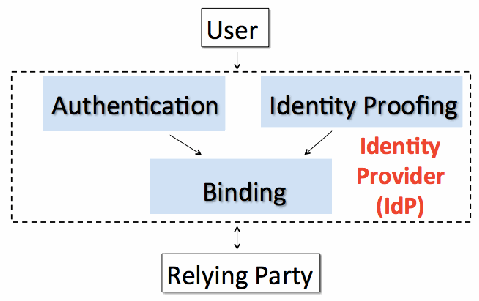
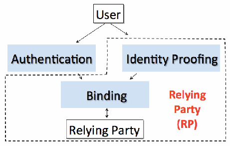
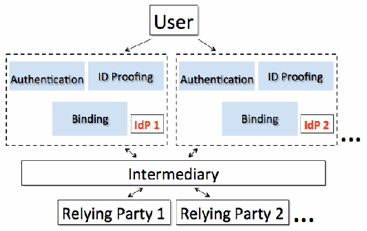

NIST IR 8054 日本語訳
英語タイトル : NSTIC Pilots: Catalyzing the Identity Ecosystem日本語タイトル : NSTIC パイロット：アイデンティティエコシステムの促進
公開日 : 2016-03-15
原文URL : https://csrc.nist.gov/pubs/ir/8054/upd1/final
翻訳編集 : 自動生成（有志による非公式の日本語訳）, 原文取得日 : 2026-10-31, 訳文 : 425 / 431 ブロック
[要約] NIST IR 8054 は、2011 年にホワイトハウスが示した「サイバースペースにおける信頼できるアイデンティティのための国家戦略」（NSTIC）のパイロットを扱う報告書です。パイロットは NSTIC の不可欠な要素であり、オンライン取引のセキュリティ、プライバシー、相互運用性、使いやすさの向上を促すためのものと位置づけられています。本書は、各パイロットの概要と成果を詳しく示し、革新的なアイデンティティソリューションの開発と運用に関するパイロットの取り組みに共通するテーマを探ります。構成は、エグゼクティブサマリー、背景、パイロットのテーマ、結論です。
NISTIR 8054
NISTIR 8054
NSTIC Pilots: Catalyzing the Identity Ecosystem
NSTIC パイロット: アイデンティティエコシステムの促進
Katerina Megas
Phil Lam
Ellen Nadeau
Colin Soutar
Katerina Megas
Phil Lam
Ellen Nadeau
Colin Soutar
This publication is available free of charge from:
http://dx.doi.org/10.6028/NIST.IR.8054
本刊行物は次の場所から無料で入手できます:
http://dx.doi.org/10.6028/NIST.IR.8054
［NIST のロゴ。公的な標章のため、この非公式サイトには掲載していません。原本 PDF を参照してください。］
NISTIR 8054
NISTIR 8054
NSTIC Pilots: Catalyzing the Identity Ecosystem
NSTIC パイロット: アイデンティティエコシステムの促進
Katerina Megas
Phil Lam
Ellen Nadeau
NSTIC National Program Office
Information Technology Laboratory
Katerina Megas
Phil Lam
Ellen Nadeau
NSTIC 国家プログラム室
情報技術研究所
Colin Soutar
Deloitte & Touche LLP
Arlington, VA
Colin Soutar
Deloitte & Touche LLP
Arlington, VA
This publication is available free of charge from:
http://dx.doi.org/10.6028/NIST.IR.8054
本刊行物は次の場所から無料で入手できます:
http://dx.doi.org/10.6028/NIST.IR.8054
April 2015
Includes updates as of 9-20-2015
2015 年 4 月
2015 年 9 月 20 日時点の更新を含む
U.S. Department of Commerce
Penny Pritzker, Secretary
米国商務省
Penny Pritzker 長官
National Institute of Standards and Technology
Willie May, Under Secretary of Commerce for Standards and Technology and Director
米国国立標準技術研究所
Willie May、NIST 所長兼商務次官（標準・技術担当）
National Institute of Standards and Technology Internal Report 8054
74 pages (April 2015)
米国国立標準技術研究所 内部報告書 8054
74 ページ（2015 年 4 月）
This publication is available free of charge from:
http://dx.doi.org/10.6028/NIST.IR.8054
本刊行物は次の場所から無料で入手できます:
http://dx.doi.org/10.6028/NIST.IR.8054
Certain commercial entities, equipment, or materials may be identified in this document in order to describe an experimental procedure or concept adequately. Such identification is not intended to imply recommendation or endorsement by NIST, nor is it intended to imply that the entities, materials, or equipment are necessarily the best available for the purpose.
本書では、実験手順や概念を適切に説明するために、特定の商業団体、装置、または資材を挙げている場合があります。そのような記載は、NIST による推奨や推薦を意味するものではなく、それらの団体、資材、または装置がその目的に最適であると必ずしも意味するものでもありません。
There may be references in this publication to other publications currently under development by NIST in accordance with its assigned statutory responsibilities. The information in this publication, including concepts and methodologies, may be used by federal agencies even before the completion of such companion publications. Thus, until each publication is completed, current requirements, guidelines, and procedures, where they exist, remain operative. For planning and transition purposes, federal agencies may wish to closely follow the development of these new publications by NIST.
本刊行物には、NIST が法令で定められた責務に従って現在策定中の他の刊行物への言及が含まれる場合があります。概念や方法論を含む本刊行物の情報は、そのような関連刊行物の完成前であっても、連邦機関が使用してもよいです。したがって、各刊行物が完成するまでは、現行の要件、ガイドライン、手順が存在する場合には、それらが引き続き有効です。計画および移行のため、連邦機関は、NIST によるこれらの新しい刊行物の策定状況を注意深く追うことを検討してもよいです。
Organizations are encouraged to review all draft publications during public comment periods and provide feedback to NIST. Additional information about the National Strategy for Trusted Identities in Cyberspace, and up-to-date information about the pilots, is available at www.nstic.gov. All NIST Computer Security Division publications, other than the ones noted above, are available at http://csrc.nist.gov/publications.
各組織は、パブリックコメントの期間中にすべてのドラフト刊行物を確認し、NIST にフィードバックを提供することが推奨されます。サイバースペースにおける信頼できるアイデンティティのための国家戦略に関する追加情報と、パイロットに関する最新情報は、www.nstic.gov で入手できます。上記以外の NIST コンピュータセキュリティ部門のすべての刊行物は、http://csrc.nist.gov/publications で入手できます。
Comments on this publication may be submitted to:
本刊行物へのコメントは次の宛先へ送付できます。
National Institute of Standards and Technology
Attn: Computer Security Division, Information Technology Laboratory
100 Bureau Drive (Mail Stop 8930) Gaithersburg, MD 20899-8930
Email: nstic@nist.gov
National Institute of Standards and Technology
Attn: Computer Security Division, Information Technology Laboratory
100 Bureau Drive (Mail Stop 8930) Gaithersburg, MD 20899-8930
Email: nstic@nist.gov
Reports on Computer Systems Technology
コンピュータシステム技術に関する報告書
The Information Technology Laboratory (ITL) at the National Institute of Standards and Technology (NIST) promotes the U.S. economy and public welfare by providing technical leadership for the Nation’s measurement and standards infrastructure. ITL develops tests, test methods, reference data, proof of concept implementations, and technical analyses to advance the development and productive use of information technology. ITL’s responsibilities include the development of management, administrative, technical, and physical standards and guidelines for the cost-effective security and privacy of other than national security-related information in federal information systems.
米国国立標準技術研究所（NIST）の情報技術研究所（ITL）は、国の計測・標準インフラストラクチャに対する技術的なリーダーシップを提供することで、米国の経済と公共の福祉を促進しています。ITL は、情報技術の発展と生産的な利用を推進するため、試験、試験方法、参照データ、概念実証の実装、技術分析を開発しています。ITL の責務には、連邦情報システムにおける、国家安全保障に関係しない情報のセキュリティとプライバシーを費用対効果よく確保するための、管理上、運用上、技術上、物理上の標準およびガイドラインの策定が含まれます。
Abstract
概要
Pilots are an integral part of the National Strategy for Trusted Identities in Cyberspace (NSTIC), issued by the White House in 2011 to encourage enhanced security, privacy, interoperability, and ease of use for online transactions. This document details summaries and outcomes of NSTIC pilots; in addition, it explores common themes in the pilots’ work developing and operating innovative identity solutions.
パイロットは、オンライン取引のセキュリティ、プライバシー、相互運用性、使いやすさの向上を促すために 2011 年にホワイトハウスが発表した、サイバースペースにおける信頼できるアイデンティティのための国家戦略（NSTIC）に不可欠な要素です。本書では、NSTIC パイロットの概要と成果を詳しく説明し、あわせて、革新的なアイデンティティソリューションを開発・運用するパイロットの取り組みに共通するテーマを探ります。
Keywords
キーワード
Identity; security; privacy; interoperability; cooperative agreement; pilot; NSTIC; authentication; identity management; cybersecurity; information security.
アイデンティティ、セキュリティ、プライバシー、相互運用性、協力協定、パイロット、NSTIC、認証、アイデンティティ管理、サイバーセキュリティ、情報セキュリティ。
Acknowledgements
謝辞
The following individuals participated in the preparation of this document: Barbara Cuthill, Mike Garcia, Jeremy Grant, Paul Grassi, and Naomi Lefkovitz. We would also like to acknowledge the efforts of all of the NSTIC pilot recipients whose hard work and perseverance continue to create the successes of the program, while exposing remaining challenges in the current state of the Identity Ecosystem.
次の方々が本書の作成に参加しました。Barbara Cuthill、Mike Garcia、Jeremy Grant、Paul Grassi、Naomi Lefkovitz。また、このプログラムの成功を生み出し続けるとともに、アイデンティティエコシステムの現状に残る課題を明らかにしてきた、NSTIC パイロットのすべての受領者の努力と粘り強さにも感謝します。
Audience
対象読者
The purpose of this NISTIR is to summarize common themes from the NSTIC pilot work by highlighting overall successes catalyzed by the pilots, as well as suggesting areas where additional work could help to further develop the Identity Ecosystem. Organizations and individuals that seek to enhance the Identity Ecosystem may benefit from reading this NISTIR.
本 NISTIR の目的は、パイロットが促進した全体的な成功を取り上げるとともに、アイデンティティエコシステムをさらに発展させるうえで追加の取り組みが役立つ可能性のある分野を示すことで、NSTIC パイロットの取り組みに共通するテーマを要約することです。アイデンティティエコシステムの強化を目指す組織や個人は、本 NISTIR を読むことで利益を得られる可能性があります。
Trademark Information and Company Information
商標情報および企業情報
This NISTIR comprises general discussion points relating to NSTIC pilot implementations. Any direct or indirect references to a specific pilot recipient’s corporate capabilities or to any product or service offering is not intended to imply any endorsement or judgment by NIST but is used solely to illustrate common themes of the Pilots Program. The pilot recipients retain ownership of all of their trademark and company information.
本 NISTIR は、NSTIC パイロットの実装に関する一般的な論点をまとめたものです。特定のパイロット受領者の企業としての能力、または製品やサービスの提供への直接的または間接的な言及は、NIST による推奨や判断を示すものではなく、パイロットプログラムに共通するテーマを説明するためだけに用いられています。パイロット受領者は、自らの商標および企業情報すべての所有権を保持します。
Errata
正誤表
This table explains the minor editorial changes incorporated into NISTIR 8054 based on feedback received on the initial publication (posted on 4/14/15).
この表は、最初の刊行物（2015 年 4 月 14 日に掲載）に対して寄せられたフィードバックに基づいて NISTIR 8054 に反映した、軽微な編集上の変更を説明するものです。
| Date | Type | Change |
|---|---|---|
| 09-20-2015 | Editorial | Made minor edits throughout the document to more clearly explain the recipient organizations’ experiences. |
| 09-20-2015 | Editorial | Added new citations and updated existing ones to provide additional references for readers. These are included among the footnotes and the new Section 5.5, “References.” |
| 日付 | 種類 | 変更 |
|---|---|---|
| 09-20-2015 | 編集上 | 受領者組織の経験をより明確に説明するため、文書全体にわたって軽微な編集を行いました。 |
| 09-20-2015 | 編集上 | 読者のための追加の参考文献を提供するため、新しい引用を追加し、既存の引用を更新しました。これらは、脚注と、新しい第 5.5 節「参考文献」に含まれています。 |
Table of Contents
目次
1. Executive Summary
1. エグゼクティブサマリー
In 2011, President Obama signed the National Strategy for Trusted Identities in Cyberspace (NSTIC) to improve online transactions through the creation of an Identity Ecosystem. The Strategy calls for the private sector to “lead the development and implementation of this Identity Ecosystem,” and for government to “partner with the private sector to ensure that the Identity Ecosystem implements all of the Guiding Principles (GPs).”1
2011 年、オバマ大統領は、アイデンティティエコシステムの構築によってオンライン取引を改善するため、サイバースペースにおける信頼できるアイデンティティのための国家戦略（NSTIC）に署名しました。この戦略は、民間部門に「このアイデンティティエコシステムの開発と実装を主導する」ことを、政府に「民間部門と連携して、アイデンティティエコシステムがすべての指導原則（GP）を実装するようにする」ことを求めています。1
In support of this, the NSTIC National Program Office (NPO) established the NSTIC Pilots Cooperative Agreement Program (Pilots Program), focused on catalyzing a marketplace of identity solutions that adhere to the vision and principles in the NSTIC. The Pilots Program is an integral part of the implementation of the NSTIC; since 2012, the National Institute of Standards and Technology (NIST) has awarded approximately $30 million to 15 pilots.2
これを支援するため、NSTIC 国家プログラム室（NPO）は、NSTIC の構想と原則に沿ったアイデンティティソリューションの市場を促進することに焦点を当てた、NSTIC パイロット協力協定プログラム（パイロットプログラム）を設けました。パイロットプログラムは NSTIC の実装に不可欠な要素であり、2012 年以来、米国国立標準技術研究所（NIST）は、15 件のパイロットに約 3,000 万ドルを交付してきました。2
These pilots have seeded the market with NSTIC-aligned identity solutions, engaging the healthcare, finance, education, retail, aerospace, and government sectors, among others. Observing the pilots’ work, the NSTIC NPO has identified several common themes in developing and operating innovative identity solutions. These fall into three general categories:
これらのパイロットは、とりわけ医療、金融、教育、小売、航空宇宙、政府の各分野を巻き込み、NSTIC に沿ったアイデンティティソリューションを市場に根付かせてきました。パイロットの取り組みを観察して、NSTIC NPO は、革新的なアイデンティティソリューションの開発と運用に共通するいくつかのテーマを特定しました。それらは大きく 3 つの分類に分けられます。
1.Market forces and relying party (RP) motivations;3
1.市場の力と依拠当事者（RP）の動機3
2.Emerging identity architectures and components; and
2.登場しつつあるアイデンティティアーキテクチャとコンポーネント
3.Standards and interoperability.
3.標準と相互運用性
Among other important technical points, a number of pilots noted the critical role of componentizing identity functions to establish sustainable solutions: the identity market is made up of a variety of discrete functions (e.g., attribute verification, token issuance), and identity proofing and credential issuance are often separated in identity architectures. The pilots recognized the importance of defining the functions within an architecture as opposed to the actors implementing the functions. They also revealed the challenges of managing a componentized architecture, since existing certification schemes don’t always support componentization.
他の重要な技術的論点のなかでも、多くのパイロットが、持続可能なソリューションを確立するうえで、アイデンティティ機能のコンポーネント化が決定的な役割を果たすことを指摘しました。アイデンティティ市場はさまざまな個別の機能（属性の検証、トークンの発行など）で構成されており、アイデンティティアーキテクチャでは、身元確認とクレデンシャルの発行が分離されていることがよくあります。パイロットは、機能を実装する主体ではなく、アーキテクチャ内の機能を定義することの重要性を認識しました。また、既存の認証スキームがコンポーネント化を必ずしも支援しないことから、コンポーネント化されたアーキテクチャを管理することの難しさも明らかにしました。
The pilots also faced similar challenges in their business transactions – especially when conveying the value proposition of identity solutions to relying parties. Generally, organizations outsource anything that isn’t a core competency unless there’s a significant risk to not doing this work themselves. The pilots found that RPs often didn’t consider identity management a core competency, but also struggled to assess the organizational risk of outsourcing it. The pilots found it necessary to present their solutions in a way that spoke to organizations’ top line: the RP’s ability to generate revenue and recruit and retain customers.
パイロットは、ビジネス取引、特にアイデンティティソリューションの価値提案を依拠当事者に伝える場面でも、同様の課題に直面しました。一般に、組織は、自ら作業を行わないことに重大なリスクがある場合を除き、中核的な能力でないものはすべてアウトソースします。パイロットは、RP がアイデンティティ管理を中核的な能力とみなさないことが多い一方で、それをアウトソースする場合の組織のリスクを評価することにも苦労していることを見いだしました。パイロットは、組織の収益に訴える形で、つまり RP が収益を生み出し、顧客を獲得して維持する能力に訴える形で、ソリューションを提示する必要があることを見いだしました。
While this NISTIR focuses on the NSTIC Pilots Program, these pilots are only one of three focus areas of NSTIC implementation. The NPO also supports the development of an Identity Ecosystem Framework (IDEF) via the Identity Ecosystem Steering Group (IDESG), a private sector-led organization.4 Additionally, the NPO works with federal agencies to facilitate government’s role as an early adopter of NSTIC-aligned identity solutions.5
本 NISTIR は NSTIC パイロットプログラムに焦点を当てていますが、これらのパイロットは NSTIC の実装における 3 つの重点分野の一つにすぎません。NPO は、民間部門が主導する組織であるアイデンティティエコシステム運営グループ（IDESG）を通じて、アイデンティティエコシステムフレームワーク（IDEF）の策定も支援しています。4 さらに、NPO は連邦機関と協力して、NSTIC に沿ったアイデンティティソリューションの早期採用者としての政府の役割を促進しています。5
The NSTIC pilots continue to play a role in implementing the NSTIC by testing the commercial viability of various aspects of the Ecosystem and reporting back with lessons learned and by moving successful solutions into production. While some NSTIC pilots have advanced further than others, each has contributed to seeding the identity marketplace – by both successfully developing new technologies and models for online identity, and extracting valuable lessons learned. The work of these pilots lays a strong foundation for organizations tackling online identity.
NSTIC パイロットは、エコシステムのさまざまな側面の商業的な実現可能性を試験し、そこから得られた教訓を報告するとともに、成功したソリューションを本番環境に移行することで、NSTIC の実装において引き続き役割を果たしています。NSTIC パイロットの中には他より先に進んでいるものもありますが、それぞれが、オンラインアイデンティティの新しい技術とモデルの開発に成功するとともに、貴重な教訓を引き出すことによって、アイデンティティ市場の形成に貢献してきました。これらのパイロットの取り組みは、オンラインアイデンティティに取り組む組織にとって強固な基盤となっています。
In the short term, the NPO sees the continued importance of supporting the NSTIC Pilots Program to build upon the successes and address the challenges that the pilots have uncovered. The NPO expects that the Pilots Program will evolve from one that addresses broad challenges to one that overcomes more specific gaps in the market, further catalyzing the marketplace and establishing a thriving and sustainable Identity Ecosystem.
短期的には、NPO は、パイロットが明らかにした課題に対処し、その成功を土台としてさらに発展させるため、NSTIC パイロットプログラムへの支援を継続することが引き続き重要だと考えています。NPO は、パイロットプログラムが広範な課題に取り組むものから、市場のより具体的なギャップを克服するものへと発展し、市場をさらに活性化して、活気があり持続可能なアイデンティティエコシステムを確立することを期待しています。
In the long term, as the role of online identity changes, particularly with still-emerging fields such as big data and cyber-physical systems, it will be important for NIST to maintain an ongoing identity management presence. This presence will increasingly take the form of standards development, reference materials, and open source development and less on large pilots. Where necessary, a more targeted pilots program will focus on filling critical gaps in the Identity Ecosystem, continually evolving to help address market impediments as they emerge.
長期的には、オンラインアイデンティティの役割が変化するなかで、特にビッグデータやサイバーフィジカルシステムなど、いまだ発展途上の分野において、NIST がアイデンティティ管理に継続的に取り組むことが重要になります。この取り組みは、大規模なパイロットよりも、標準の策定、参考資料、オープンソース開発という形をとるようになります。必要に応じて、より対象を絞ったパイロットプログラムが、アイデンティティエコシステムの重大なギャップを埋めることに焦点を当て、市場の障害が現れるたびに、その解消を支援するよう継続的に進化していきます。
2. Background
2. 背景
The National Strategy for Trusted Identities in Cyberspace (NSTIC), signed by President Obama in 2011, is a White House initiative to work collaboratively with the private sector, advocacy groups, public sector agencies, and other organizations to improve online transactions.6 The NSTIC vision is that individuals and organizations utilize secure, efficient, easy-to-use, and interoperable identity solutions to access online services in a manner that promotes confidence, privacy, choice, and innovation. It describes four Guiding Principles (GPs) to which all identity solutions will adhere: (1) privacy-enhancing and voluntary, (2) secure and resilient, (3) interoperable, and (4) cost-effective and easy-to-use.
2011 年にオバマ大統領が署名したサイバースペースにおける信頼できるアイデンティティのための国家戦略（NSTIC）は、民間部門、擁護団体、公共部門の機関、その他の組織と協力して、オンライン取引を改善するためのホワイトハウスの取り組みです。6 NSTIC の構想は、個人と組織が、信頼、プライバシー、選択、イノベーションを促進する形で、オンラインサービスにアクセスするために、安全で、効率的で、使いやすく、相互運用可能なアイデンティティソリューションを利用するというものです。この戦略は、すべてのアイデンティティソリューションが遵守する 4 つの指導原則（GP）を示しています。(1) プライバシーを強化し、自発的であること、(2) 安全でレジリエントであること、(3) 相互運用可能であること、(4) 費用対効果が高く、使いやすいこと。
The NSTIC vision will be realized through the creation of an Identity Ecosystem: an online environment where individuals and organizations will be able to trust each other because they follow agreed-upon standards and policies to obtain and authenticate their digital identities. Implementation of the NSTIC has three major focus areas:
NSTIC の構想は、アイデンティティエコシステムの構築によって実現されます。アイデンティティエコシステムとは、個人と組織が、合意された標準とポリシーに従ってデジタルアイデンティティを取得し認証するため、互いに信頼できるようになるオンライン環境です。NSTIC の実装には、3 つの主要な重点分野があります。
1.Catalyzing a marketplace of identity solutions through the NSTIC pilots discussed in this document.
1.本書で論じる NSTIC パイロットを通じた、アイデンティティソリューションの市場の促進。
2.Supporting the development of an Identity Ecosystem Framework (IDEF) via a private sector-led organization. This framework of standards and policies serves as a foundation for interoperability across the Ecosystem. The Identity Ecosystem Steering Group (IDESG) is a privately-led, non-profit organization which received a NIST grant to lead the framework development. NIST participates in the IDESG, along with 240 organizational and 120 individual members that span the academic, advocacy, government, and private sectors.
2.民間部門が主導する組織を通じた、アイデンティティエコシステムフレームワーク（IDEF）の策定の支援。この標準とポリシーのフレームワークは、エコシステム全体の相互運用性の基盤となります。アイデンティティエコシステム運営グループ（IDESG）は、民間が主導する非営利組織であり、フレームワークの策定を主導するために NIST の助成金を受けました。NIST は、学界、擁護団体、政府、民間部門にまたがる 240 の組織会員と 120 の個人会員とともに、IDESG に参加しています。
3.Establishing the federal government as an early adopter of NSTIC-aligned identity solutions. Connect.Gov - a hub-based federation solution – officially launched in a pilot phase in November 2014.7 It aims to ease the process by which agencies can accept federated credentials from both government and commercial identity providers (IdPs).
3.連邦政府を、NSTIC に沿ったアイデンティティソリューションの早期採用者として位置づけること。ハブ型のフェデレーションソリューションである Connect.Gov は、2014 年 11 月にパイロット段階で正式に開始されました。7 これは、政府と商用の両方のアイデンティティプロバイダ（IdP）からのフェデレーションされたクレデンシャルを機関が受け入れる手続きを容易にすることを目指しています。
NSTIC Pilots Program
NSTIC パイロットプログラム
NIST launched the NSTIC Pilots Cooperative Agreement Program (Pilots Program) in 2012 to advance the NSTIC vision, objectives, and GPs by catalyzing a marketplace of NSTIC-aligned identity solutions that overcome barriers that have impeded development of the Identity Ecosystem.
NIST は、アイデンティティエコシステムの発展を妨げてきた障壁を克服する、NSTIC に沿ったアイデンティティソリューションの市場を促進することで、NSTIC の構想、目的、GP を推進するため、2012 年に NSTIC パイロット協力協定プログラム（パイロットプログラム）を開始しました。
Since the onset of the Pilots Program, NIST has awarded funding for four sets of NSTIC pilots through a competitive process – 15 pilots in total.8 The pilots are laying the groundwork for a vibrant new marketplace of identity solutions by developing and deploying technology, models, and frameworks that wouldn’t otherwise exist. Additionally, they are informing the development of the IDEF within the IDESG.
パイロットプログラムの開始以来、NIST は、競争的なプロセスを通じて 4 組の NSTIC パイロットに資金を提供してきました。パイロットは合計 15 件です。8 パイロットは、そうでなければ存在しなかったであろう技術、モデル、フレームワークを開発し展開することで、アイデンティティソリューションの活気ある新しい市場の土台を築いています。加えて、IDESG における IDEF の策定にも情報を提供しています。
The NSTIC pilots are funded as cooperative agreements, enabling a significant degree of collaboration between the NSTIC National Program Office (NPO) and the pilot recipients throughout the life of the grant. The pilots have been successful in their efforts to seed the marketplace with identity solutions; their work has led to a wide variety of technologies that are designed to provide stronger identity solutions for relying parties (RPs) across many communities. An RP is an online service that relies on an external IdP to authenticate a user. An RP may also use an attribute provider (AP) service to verify user identity attributes. The pilots have produced tangible benefits for the broad array of RPs participating in the pilots, and are bringing the importance of stronger, more convenient identity solutions to the attention of businesses and consumers alike. The purpose of this report is to provide a summary of the outcomes of the NSTIC Pilots Program to date and to illustrate common themes and considerations brought to light by the pilots’ work.9
NSTIC パイロットは協力協定として資金提供されており、助成の期間を通じて、NSTIC 国家プログラム室（NPO）とパイロット受領者の間で大幅な協力が可能になっています。パイロットは、アイデンティティソリューションで市場に種をまく取り組みで成果を上げてきました。その取り組みは、多くのコミュニティにわたる依拠当事者（RP）に、より強固なアイデンティティソリューションを提供することを目的とした、多種多様な技術につながっています。RP とは、ユーザーを認証するために外部の IdP に依拠するオンラインサービスです。RP は、ユーザーのアイデンティティ属性を検証するために、属性プロバイダ（AP）のサービスを使用する場合もあります。パイロットは、パイロットに参加した幅広い RP に具体的な利益をもたらしており、より強固で、より便利なアイデンティティソリューションの重要性を、企業と消費者の双方に認識させつつあります。本報告書の目的は、これまでの NSTIC パイロットプログラムの成果の概要を示し、パイロットの取り組みによって明らかになった共通のテーマと考慮事項を説明することです。9
Selection of Pilots
パイロットの選定
With each round of funding, NIST has employed a two-step approach to select pilot awardees. In the first step, interested applicants submit an abbreviated application describing the proposed project in no more than four pages. In the second step of selection, NIST narrows the field to the applicants that best align with program goals and invites them to submit full applications with detailed budget information, a technical proposal of no more than 25 pages (in-depth information on the proposed technical solution, a schedule of milestones, etc.), letters of support from partners, and other items supporting the application. These finalists undergo a thorough review and evaluation process, and NIST ultimately selects those that have the greatest chance of advancing the goals laid out in the federal funding opportunity (FFO) notice, based on the evaluation criteria and selection factors.
NIST は、資金提供の各回で、パイロットの採択者を選定するために二段階のアプローチを採用してきました。第 1 段階では、関心のある応募者が、提案するプロジェクトを 4 ページ以内で説明する簡略版の申請書を提出します。選定の第 2 段階では、NIST は、プログラムの目標に最もよく合致する応募者に絞り込み、詳細な予算情報、25 ページ以内の技術提案（提案する技術的ソリューションの詳細情報、マイルストーンの計画など）、パートナーからの支援書簡、その他の申請を裏付ける資料を含む正式な申請書の提出を依頼します。これらの最終候補者は、徹底した審査と評価のプロセスを経て、NIST は最終的に、評価基準と選定要素に基づいて、連邦助成金公募（FFO）の通知に示された目標を最も推進できる可能性が高い者を選定します。
After selecting pilots, the NSTIC NPO continually monitors their performance and conducts formal reviews on a quarterly basis. This provides regular opportunities to review strengths and accomplishments, to address challenges and changes in pilot timelines, and to make any adjustments to increase the likelihood of pilot success.
パイロットを選定した後、NSTIC NPO はそれらの実施状況を継続的に監視し、四半期ごとに正式な審査を行います。これにより、強みと成果を確認し、課題とパイロットの日程の変更に対処し、パイロットが成功する可能性を高めるための調整を行うための機会が、定期的に得られます。
The NSTIC NPO measures the progress of pilots annually to make performance-based funding decisions based on pilot results. Some pilots receive funding for multiple years because they are continually advancing and catalyzing the identity marketplace. In this quickly evolving market and technology landscape, some projects encounter difficulties and require scope changes or are no longer appropriate to continue. Pairing performance evaluations of current pilots with a rigorous selection process for new ones, the NPO selects a full pilot portfolio each year with the potential to most effectively catalyze the marketplace.
NSTIC NPO は、パイロットの成果に基づく成果連動型の資金提供の判断を行うため、毎年パイロットの進捗を測定しています。一部のパイロットは、アイデンティティ市場を継続的に前進させ促進しているため、複数年にわたって資金提供を受けます。この急速に変化する市場と技術の状況において、一部のプロジェクトは困難に直面して範囲の変更が必要になったり、継続することがもはや適切でなくなったりします。NPO は、現行のパイロットの成果評価と、新規パイロットの厳格な選定プロセスを組み合わせて、毎年、市場を最も効果的に促進できる可能性のあるパイロットの全体の構成を選定します。
2.1. Summary of first phase of NSTIC Pilots (FY2012)10
2.1. NSTIC パイロットの第 1 段階（FY2012）の概要10
In Fiscal Year (FY) 2012, NIST received 186 abbreviated applications in response to the FFO. Of 27 finalists, five were awarded pilot funding in the initial round of NSTIC cooperative agreements. These award recipients were key to the IDESG in its nascent phases, by testing concepts in the marketplace and sharing their experiences to inform the development of the Identity Ecosystem. The remainder of this section provides a summary of each funded pilot.
2012 会計年度（FY）に、NIST は FFO に応じた 186 件の簡略版の申請書を受領しました。最終候補者 27 件のうち 5 件が、NSTIC 協力協定の最初の回でパイロットの資金提供を受けました。これらの受領者は、市場で概念を試験し、アイデンティティエコシステムの策定に情報を提供するために経験を共有することで、IDESG の草創期に重要な役割を果たしました。本節の以降の部分では、資金提供を受けた各パイロットの概要を示します。
The Cross Sector Digital Identity Initiative (CSDII)
クロスセクター・デジタルアイデンティティ・イニシアチブ（CSDII）
Recipient: The American Association of Motor Vehicle Administrators (AAMVA)
受領者: 米国自動車管理者協会（AAMVA）
AAMVA leads CSDII, a consortium of private industry and government partners formed to leverage in-person proofing at state departments of motor vehicles (DMVs) – done as part of the driver’s license issuance process – to strengthen social login credentials held by consumers (existing logins from social networking and email providers such as Google and Facebook). Throughout the pilot, AAMVA has been responding to market needs by leveraging other remote and in-person identity proofing events, such as in-person proofing through healthcare providers.
AAMVA は CSDII を主導しています。CSDII は、民間産業と政府のパートナーによるコンソーシアムであり、運転免許証の発行手続きの一部として州の自動車局（DMV）で行われる対面での身元確認を活用して、消費者が保有するソーシャルログインのクレデンシャル（Google や Facebook などのソーシャルネットワーキングや電子メールのプロバイダによる既存のログイン）を強化するために結成されました。パイロットの全期間を通じて、AAMVA は、医療提供者を通じた対面での身元確認など、他のリモートおよび対面での身元確認の機会を活用して、市場のニーズに応えてきました。
In addition to AAMVA, the CSDII consortium includes the Commonwealth of Virginia Department of Motor Vehicles, CA Technologies, Microsoft, and Biometric Signature ID. The pilot focuses on healthcare applications and a state use case. The healthcare applications will enable patients and providers to more easily and securely access health information with strong digital credentials.11 Additionally, the CSDII pilot intends to provide individuals with convenient online access to governmental services via Commonwealth of Virginia websites.
AAMVA のほか、CSDII コンソーシアムには、バージニア州自動車局、CA Technologies、Microsoft、Biometric Signature ID が含まれます。このパイロットは、医療アプリケーションと州のユースケースに焦点を当てています。医療アプリケーションにより、患者と医療提供者は、強力なデジタルクレデンシャルを使って、健康情報により容易かつ安全にアクセスできるようになります。11 加えて、CSDII パイロットは、バージニア州のウェブサイトを通じて、個人が政府サービスに便利にオンラインでアクセスできるようにすることを目指しています。
Outcomes:
成果:
•Developed a solution that innovatively binds identity proofing capabilities to social login credentials. For example, AAMVA brokers a process enabling individuals to link social logins to a set of verified attributes obtained through a prior in-person proofing visit to the Virginia Department of Motor Vehicles or healthcare providers. Individuals can also link social logins to a 3rd party identity proofing solution via Experian.
•身元確認の能力をソーシャルログインのクレデンシャルに結び付ける、革新的なソリューションを開発しました。たとえば、AAMVA は、バージニア州自動車局や医療提供者での事前の対面での確認で得られた、検証済みの属性の集合に、個人がソーシャルログインを関連付けられるようにするプロセスを仲介しています。個人は、Experian による 3rd パーティの身元確認ソリューションにソーシャルログインを関連付けることもできます。
•Uses Microsoft’s orchestration tool based on the U-Prove token technology to restrict the personal information accessible to RPs and all participant organizations (i.e., IdPs, APs) to only that required for a transaction.12 This privacy preserving technology offers the end users assurance regarding the ongoing privacy and security of their information.
•U-Prove トークン技術に基づく Microsoft のオーケストレーションツールを使用して、RP とすべての参加組織（IdP、AP など）がアクセスできる個人情報を、取引に必要なものだけに制限しています。12 このプライバシー保護技術は、エンドユーザーに、自分の情報のプライバシーとセキュリティが継続的に守られるという保証を提供します。
•By establishing the CSDII Pilot Trust Framework, gained agreement among pilot participants (i.e., RPs, IdPs, APs, and companies providing remote proofing and identity infrastructure) on operational policies and practices, bylaws, and recommended participant practices. This approach was designed to streamline the onboarding of additional states and other parties to the CSDII and save the costs of developing and maintaining bilateral agreements. Currently, new participants are reviewing the CSDII Pilot Trust Framework to participate in the CSDII.
•CSDII パイロット信頼フレームワークを確立することで、パイロット参加者（RP、IdP、AP、リモートでの確認とアイデンティティ基盤を提供する企業）の間で、運用上のポリシーと実務、細則、推奨される参加者の実務について合意を得ました。このアプローチは、追加の州やその他の関係者の CSDII への参加手続きを効率化し、二者間協定の策定と維持にかかる費用を節約するように設計されました。現在、新しい参加者が CSDII に参加するために、CSDII パイロット信頼フレームワークを確認しています。
•Exposed the need for Virginia to pass specific legislation addressing identity, which informed House Bill 1562. Enacted in 2015, the Electronic Identity Management Bill codifies the Commonwealth’s approach to trust frameworks, standards, and liability.13
•バージニア州がアイデンティティを扱う特定の法律を成立させる必要があることを明らかにし、それが下院法案 1562 の根拠となりました。2015 年に制定された電子アイデンティティ管理法は、信頼フレームワーク、標準、責任に対する同州のアプローチを成文化しています。13
The Attribute Exchange Network
属性交換ネットワーク
Recipient: Criterion Systems, Inc.
受領者: Criterion Systems, Inc.
Criterion Systems, Inc., successfully deployed a user-centric online Attribute Exchange Network (AXN) that enables individuals to enhance their existing credentials (e.g., email, social network providers) for use in secure transactions. The AXN brings together multiple IdPs and APs, allowing individuals to manage their attribute data via a user-managed console. The AXN creates a modular way for online service providers to help individuals “build” a strong credential for enhanced-trust applications by linking together multiple claims (e.g., name, street address, age) already known by APs in the marketplace. As an example of how Criterion worked with a number of organizations across sectors, it supported first responders with the Department of Homeland Security (DHS), and customers of a Fortune 100 company and Broadridge Financial Services.
Criterion Systems, Inc. は、個人が既存のクレデンシャル（電子メール、ソーシャルネットワークプロバイダなど）を安全な取引で使用できるよう強化する、ユーザー中心のオンライン属性交換ネットワーク（AXN）の展開に成功しました。AXN は複数の IdP と AP を結び付け、個人がユーザー管理のコンソールを介して属性データを管理できるようにします。AXN は、市場の AP がすでに把握している複数のクレーム（氏名、住所、年齢など）を結び付けることで、オンラインサービスプロバイダが、信頼性を高めたアプリケーション向けの強力なクレデンシャルを個人が「構築」できるよう支援する、モジュール式の方法を生み出します。Criterion が各分野の複数の組織と連携した例として、国土安全保障省（DHS）と協力してファーストレスポンダーを支援し、フォーチュン100企業および Broadridge Financial Services の顧客も支援しました。
IdPs included Google, Verizon, Symantec, AOL, Facebook, LinkedIn, and Amazon. APs included LexisNexis, Experian, Equifax, and PacificEast.
IdP には、Google、Verizon、Symantec、AOL、Facebook、LinkedIn、Amazon が含まれていました。AP には、LexisNexis、Experian、Equifax、PacificEast が含まれていました。
Outcomes:
成果:
•Successfully piloted the AXN solution at Broadridge, enabling customers to securely access mobile delivery of financial services content, bill presentment, and bill pay. Criterion launched with the new Broadridge/Pitney Bowes joint venture, offering the ability for secure digital delivery to up to 140 million customers.14
•Broadridge で AXN ソリューションのパイロットを成功させ、顧客が金融サービスのコンテンツのモバイル配信、請求書の提示、請求書の支払いに安全にアクセスできるようにしました。Criterion は、Broadridge と Pitney Bowes の新しい合弁事業とともに開始し、最大 1 億 4,000 万人の顧客に安全なデジタル配信を提供する能力を実現しました。14
•Successfully piloted with a Fortune 100 company, enabling this company to access corporate data by verifying the attributes of company partners who provided external credentials. This was designed to facilitate the sharing of sensitive company data among internal and external partners in a way that preserved privacy, security, and efficiency.
•フォーチュン 100 企業とのパイロットを成功させ、外部のクレデンシャルを提供した同社のパートナーの属性を検証することで、同社が企業データにアクセスできるようにしました。これは、プライバシー、セキュリティ、効率を保ちながら、社内外のパートナー間で同社の機微なデータを共有しやすくするように設計されました。
•In partnership with DHS, enabled over 1100 transactions, which support first responders in more easily accessing the National Incident Command Service to more efficiently and securely share information.15
•DHS と連携して、1,100 件を超える取引を可能にしました。これにより、ファーストレスポンダーが国家インシデント指揮サービスにより容易にアクセスして、より効率的かつ安全に情報を共有できるよう支援しています。15
•Worked with the U.S. Census Bureau to test an ability for respondents to the upcoming 2016 American Household Survey to electronically verify their personal information and complete the survey online. This approach could result in significant cost savings in survey administration.
•米国国勢調査局と協力して、今後の 2016 年アメリカ世帯調査の回答者が、個人情報を電子的に検証し、オンラインで調査に回答できる能力を試験しました。このアプローチは、調査の運営において大幅な費用の節約につながる可能性があります。
Advancing Commercial Participation in the NSTIC Ecosystem
NSTIC エコシステムへの商業的な参加の促進
Recipient: Daon, Inc.
受領者: Daon, Inc.
Daon adapted its IdentityX authentication technology to align with the NSTIC principles by converting a proprietary solution to a federated, interoperable, standards-based (Security Assertion Markup Language [SAML] and Open ID Connect [OIDC]) solution designed to offer strong authentication in a manner that improves both security and usability. Daon’s IdentityX solution provides multifactor authentication (MFA) on the iOS and Android platforms with the ability to selectively combine a variety of traditional and non-traditional authentication methods of varying strength – voice and face biometrics, device authentication, password, PIN, one-time password, and location – depending on the risk level of the transaction and customer choice.
Daon は、独自仕様のソリューションを、フェデレーション型で、相互運用可能な、標準に基づく（Security Assertion Markup Language [SAML] と Open ID Connect [OIDC]）ソリューションに変換することで、自社の IdentityX 認証技術を NSTIC の原則に合わせて適応させました。このソリューションは、セキュリティとユーザビリティの両方を向上させる形で強力な認証を提供するように設計されています。Daon の IdentityX ソリューションは、iOS と Android のプラットフォームで多要素認証（MFA）を提供し、取引のリスクレベルと顧客の選択に応じて、強度の異なるさまざまな従来型および非従来型の認証方法（音声と顔の生体認証、デバイス認証、パスワード、PIN、ワンタイムパスワード、位置情報）を選択的に組み合わせる能力を備えています。
A diverse group of RPs have brought high assurance credentials to a wider audience by piloting this solution, including AARP, Purdue University, and the American Association of Airport Executives (AAAE). Daon also worked with the Kantara Initiative and FICAM’s Trust Framework Solutions (TFS), the federated identity framework for the U.S. Federal Government.16
AARP、パデュー大学、米国空港経営者協会（AAAE）など、多様な RP のグループが、このソリューションのパイロットを実施することで、保証レベルの高いクレデンシャルをより多くの人々に提供しました。Daon は、Kantara Initiative や、米国連邦政府のフェデレーション型アイデンティティフレームワークである FICAM の信頼フレームワークソリューション（TFS）とも協力しました。16
Outcomes:
成果:
•Through a pilot with AARP, enabled members to access personal health information using a reusable interoperable credential, with MFA using facial and voice biometric recognition.17
•AARP とのパイロットを通じて、会員が、顔と音声の生体認識による MFA を用いて、再利用可能な相互運用可能なクレデンシャルを使い、個人の健康情報にアクセスできるようにしました。17
•Provided lessons learned in using strong MFA technology that informed the United Services Automobile Association (USAA) in launching more convenient and effective mobile account access for over 150 000 of its members through Daon’s facial and voice recognition technology.18
•強力な MFA 技術の使用から得られた教訓を提供し、これが、米国自動車協会（USAA）が Daon の顔認識と音声認識の技術を通じて、15 万人を超える会員向けに、より便利で効果的なモバイルでのアカウントアクセスを開始するうえで役立ちました。18
•Developed a capability for individuals to access results of their FBI criminal history records check through AAAE, providing them with the ability to verify and correct information revealed in background investigation reports. Production is set to begin in 2015.
•個人が AAAE を通じて FBI の犯罪履歴記録照会の結果にアクセスできる能力を開発し、身元調査報告書で明らかにされた情報を、個人が確認し訂正できるようにしました。本番運用は 2015 年に開始される予定です。
•Gave students secure access to online coursework and exams through a pilot at Purdue University, enabling institutions to place greater trust in the identity of students completing work online.19
•パデュー大学でのパイロットを通じて、学生がオンラインの講義課題と試験に安全にアクセスできるようにし、機関が、オンラインで課題を行う学生のアイデンティティをより信頼できるようにしました。19
•Drove the development of key product certification considerations for the Identity Ecosystem, including the need for more componentized certification processes and flexibility in assessments to accommodate evolving and innovative technologies. This work highlighted the need for trust framework providers (TFPs) adopted under TFS to update their trust frameworks to accommodate a more componentized architecture.20
•アイデンティティエコシステムの主要な製品認証の考慮事項の策定を推進しました。これには、よりコンポーネント化された認証プロセスの必要性と、進化し革新的な技術に対応するための評価の柔軟性が含まれます。この取り組みにより、TFS のもとで採用された信頼フレームワークプロバイダ（TFP）が、よりコンポーネント化されたアーキテクチャに対応するために、自らの信頼フレームワークを更新する必要性が浮き彫りになりました。20
Patient Coordination of Care/Zero-Knowledge Identity and Privacy Protection Service
患者のケアの調整／ゼロ知識アイデンティティおよびプライバシー保護サービス
Recipient: Resilient Network Systems, Inc.
受領者: Resilient Network Systems, Inc.
Resilient Network Systems (RNS) deployed a decentralized authentication system – based on a network of IdPs, APs, and RPs – that limits the distribution of personal information. The RNS pilot included the following partners: the National eHealth Collaborative, the American Medical Association, Authentify, Knowledge Factor, and the National Laboratory of Education Transformation.
Resilient Network Systems（RNS）は、IdP、AP、RP のネットワークに基づく、個人情報の流通を制限する分散型の認証システムを展開しました。RNS のパイロットには、National eHealth Collaborative、米国医師会、Authentify、Knowledge Factor、National Laboratory of Education Transformation がパートナーとして参加しました。
The partners listed above executed use cases in the healthcare and education sectors. This work enabled San Diego Beacon (a healthcare provider) and California public schools to operationalize identity solutions across their systems, with the goal of more securely accessing sensitive information.21
上に挙げたパートナーは、医療と教育の分野でユースケースを実行しました。この取り組みにより、San Diego Beacon（医療提供者）とカリフォルニア州の公立学校は、機微な情報により安全にアクセスすることを目標に、それぞれのシステム全体でアイデンティティソリューションを運用に移すことができました。21
Outcomes:
成果:
•The RNS pilot architecture evolved into a network for information sharing with the Northern California Regional Intelligence Center (NCRIC), enabling the transfer of highly secure information resulting in selection as a top 30 finalist for the American Council for Technology - Industry Advisory Council (ACT-IAC) Igniting Innovation awards.22
•RNS のパイロットアーキテクチャは、北カリフォルニア地域情報センター（NCRIC）との情報共有のためのネットワークに発展し、極めて安全な情報の転送を可能にして、その結果、米国技術評議会・産業諮問委員会（ACT-IAC）の Igniting Innovation 賞の上位 30 件の最終候補に選ばれました。22
•Piloted the RNS platform with the San Diego and Gorge Health Connects, enabling the sharing of patient health information between these health information exchanges by verifying doctor and staff identities. This opportunity for secure and convenient collaboration could improve accuracy of data and ultimately save hospitals and patients valuable resources, while reducing the likelihood of misdiagnoses.
•RNS のプラットフォームを San Diego Health Connect と Gorge Health Connect でパイロット運用し、医師とスタッフのアイデンティティを検証することで、これらの医療情報交換機関の間で患者の医療情報を共有できるようにしました。この安全で便利な連携の機会は、データの正確性を高め、最終的には病院と患者の貴重な資源を節約するとともに、誤診の可能性を減らせる可能性があります。
•Deployed the RNS pilot architecture in California’s Pajaro Valley Unified School District to further engage parents and guardians in their children’s academics, by verifying their relationship to their children and providing them more secure access to these students’ information online.23
•カリフォルニア州の Pajaro Valley 統合学区に RNS のパイロットアーキテクチャを展開し、保護者と後見人が子どもとの関係を検証し、これらの生徒の情報により安全にオンラインでアクセスできるようにすることで、子どもの学業への関与をいっそう高めました。23
•In partnership with Kantara, analyzed individual functions, challenging the conventional monolithic viewpoint of trust frameworks to address de-componentized identity architectures.
•Kantara と連携して個々の機能を分析し、コンポーネント化が解除されたアイデンティティアーキテクチャに対応するために、信頼フレームワークを一枚岩とする従来の見方に異議を唱えました。
Scaling Privacy and Multi-Factor Authentication
プライバシーと多要素認証の拡大
Recipient: University Corporation for Advanced Internet Development (UCAID or Internet2)
受領者: University Corporation for Advanced Internet Development（UCAID、Internet2）
Internet2 is developing tools and initiatives to advance privacy-enhancing technology for the Identity Ecosystem. Their work includes deploying smartphone-based MFA across three major university campuses, establishing a collaborative group to accelerate the adoption of MFA across universities, developing a user-centric privacy management tool, and assessing the current state of anonymous credential technologies.
Internet2 は、アイデンティティエコシステム向けのプライバシー強化技術を推進するためのツールとイニシアチブを開発しています。その取り組みには、3 つの主要な大学キャンパスにまたがるスマートフォンベースの MFA の展開、大学間での MFA の採用を加速する協力グループの設立、ユーザー中心のプライバシー管理ツールの開発、匿名クレデンシャル技術の現状の評価が含まれます。
Outcomes:
成果:
•This pilot provided funds for the Massachusetts Institute of Technology, the University of Texas, and the University of Utah to deploy MFA, and create a forum for over 50 university campuses and other organizations – representing more than a million users – to establish and improve deployment of MFA technologies.24
•このパイロットは、マサチューセッツ工科大学、テキサス大学、ユタ大学が MFA を展開するための資金を提供するとともに、100 万人を超えるユーザーを代表する 50 を超える大学キャンパスやその他の組織が、MFA 技術の展開を確立し、改善するためのフォーラムを創設しました。24
•Developed an open-source, simplified MFA enablement of Shibboleth IdPs. This work also catalyzed adoption in the research and education community; currently, over 140 universities have begun to deploy a variety of MFA technologies.25 By addressing MFA management at the enterprise level, this work has provided a method for scaling MFA to this community.26
•Shibboleth IdP での MFA 有効化を簡素化するオープンソースの仕組みを開発しました。この取り組みは研究・教育コミュニティでの採用も促進し、現在、140 を超える大学がさまざまな MFA 技術の展開を開始しています。25 MFA の管理にエンタープライズレベルで対処することで、この取り組みはこのコミュニティで MFA を拡大する方法を提供しました。26
•Identified technical and business barriers to the widespread adoption of anonymous credential technologies. Published a white paper outlining the steps that could be taken to resolve these barriers.27
•匿名クレデンシャル技術の広範な採用に対する技術上およびビジネス上の障壁を特定しました。これらの障壁を解消するために取りうる手順を示したホワイトペーパーを公表しました。27
•Developed an open-source privacy manager called PrivacyLens, driven by research at Carnegie Mellon University into user preferences for the management of their personal information. PrivacyLens aims to give users more effective methods for transparent, granular, consent-based release of personal information or attributes associated with their credentials.28
•カーネギーメロン大学での、個人情報の管理に関するユーザーの好みについての研究に基づいて、PrivacyLens というオープンソースのプライバシーマネージャーを開発しました。PrivacyLens は、クレデンシャルに関連付けられた個人情報や属性を、透明性があり、粒度が細かく、同意に基づいて開示する、より効果的な方法をユーザーに提供することを目指しています。28
•Developed and published the “Periodic Table of Trust Elements” that advances the concept of componentizing the elements of trust.29 The Georgia Tech Research Institute (GTRI) project is further elaborating on this concept, helping participants in the Identity Ecosystem understand the equivalency – across multiple communities – of components of trust that they have established. Ultimately, this could reduce an organization’s overhead and the barriers to participating in multiple communities.
•信頼要素のコンポーネント化という概念を推進する「信頼要素の周期表」を開発し、公表しました。29 ジョージア工科大学研究所（GTRI）のプロジェクトは、この概念をさらに掘り下げており、アイデンティティエコシステムの参加者が、自ら確立した信頼のコンポーネントが複数のコミュニティにわたって同等であることを理解できるよう支援しています。最終的には、組織のオーバーヘッドと、複数のコミュニティに参加する際の障壁を減らせる可能性があります。
2.2. Summary of second phase of NSTIC Pilots (FY2013)
2.2. NSTIC パイロットの第 2 段階（FY2013）の概要
The 2013 NSTIC pilot award recipients leveraged new componentized identity architecture models with innovative business models to service new communities of interest, while further developing and refining legal and governance structures that are necessary for success. They worked with 2012 pilots to build on lessons learned from the prior year, and accelerate progress. In 2013, NIST received 63 abbreviated proposals, and invited 13 applicants to submit finalist proposals before choosing the recipients of NSTIC cooperative agreements. NIST funded five pilot projects, four of which are explained below. The fifth pilot award, received by Exponent, Inc., was mutually terminated after changes in a key team member’s corporate strategy introduced an unanticipated risk for Exponent’s ability to execute on its proposal.
2013 年の NSTIC パイロットの採択先は、新しいコンポーネント化されたアイデンティティアーキテクチャモデルを革新的なビジネスモデルと組み合わせて活用し、新たな関心コミュニティにサービスを提供するとともに、成功に必要な法的構造とガバナンス構造をさらに発展させ、洗練させました。彼らは 2012 年のパイロットと協力して、前年から得た教訓を土台とし、進捗を加速させました。2013 年に、NIST は 63 件の概要提案書を受領し、NSTIC 協力協定の採択先を選ぶ前に、13 の応募者に最終候補提案書の提出を依頼しました。NIST は 5 件のパイロットプロジェクトに資金を提供し、そのうち 4 件を以下で説明します。5 件目のパイロットの採択先である Exponent, Inc. との協定は、主要なチームメンバーの企業戦略の変更によって Exponent が提案を実行する能力に予期しないリスクが生じたため、双方の合意により終了しました。
Scaling Interoperable Trust through a Trustmark Marketplace
トラストマーク・マーケットプレイスを通じた相互運用可能な信頼の拡大
Recipient: Georgia Tech Research Institute (GTRI)
受領者: Georgia Tech Research Institute（GTRI）
GTRI is tackling a significant barrier to adoption within the Identity Ecosystem: the difficulty in enabling trust and interoperability across multiple communities of interest (COIs) and trust frameworks. In simple terms: how can IdPs, RPs, and end users trust each other in a way that’s scalable across the Identity Ecosystem?
GTRI は、アイデンティティエコシステムにおける採用への大きな障壁、すなわち、複数の関心コミュニティ（COI）と信頼フレームワークにまたがって信頼と相互運用性を実現することの難しさに取り組んでいます。簡単に言えば、IdP、RP、エンドユーザーが、アイデンティティエコシステム全体に拡張できる形で、互いをどのように信頼できるかということです。
While different COIs often have their own specific rules to enable trust, there are also certain requirements that are consistent across communities. GTRI is focusing on identifying these common rules by componentizing the many parts of trust frameworks into individual trustmarks.30 For instance, GTRI can analyze requirements from two COIs and componentize them into discrete sets for trustmarks. The hypothesis is that many of these trustmarks will be common across the two COIs. By identifying the commonalities and differences between two COIs, it becomes simpler for a participant of one COI to identify what it needs to do to become a member the other.31
COI ごとに信頼を実現するための固有の規則があることが多い一方、コミュニティ間で一貫している要件もあります。GTRI は、信頼フレームワークの多くの部分を個別のトラストマークに分解することで、こうした共通の規則を特定することに注力しています。30 たとえば、GTRI は 2 つの COI の要件を分析し、それらをトラストマークの個別の集合に分解できます。仮説では、これらのトラストマークの多くは 2 つの COI に共通します。2 つの COI の共通点と相違点を特定すれば、一方の COI の参加者は、もう一方の COI のメンバーになるために何をすべきかを把握しやすくなります。31
Componentizing and clearly defining trustmarks for specific policies may also allow website owners, TFPs, and individual internet users to more easily understand the technical, business, security, and privacy requirements and policies of the websites with which they interact.
特定のポリシーに対するトラストマークをコンポーネント化して明確に定義することは、ウェブサイトの所有者、TFP、個々のインターネットユーザーが、やり取りするウェブサイトの技術上、ビジネス上、セキュリティ上、プライバシー上の要件とポリシーをより容易に理解できるようにすることにもつながる可能性があります。
Outcomes:
成果:
•Developed a trustmark framework to facilitate greater trust and interoperability of trustmarks across the Identity Ecosystem.
•アイデンティティエコシステム全体でのトラストマークの信頼と相互運用性を高めやすくするため、トラストマークフレームワークを開発しました。
•Developed over 60 unique trustmark definitions by analyzing and decomposing National Identity Exchange Federation (NIEF) and FICAM trust and interoperability requirements, encouraging interoperability across COIs.32 Currently undergoing additional assessments on NIEF members.
•全米アイデンティティ交換フェデレーション（NIEF）と FICAM の信頼と相互運用性の要件を分析して分解することで、60 を超える固有のトラストマーク定義を開発し、COI 間の相互運用性を促しました。32 現在、NIEF のメンバーについて追加の評価を実施中です。
•Issued over 90 trustmarks to organizations in NIEF, which currently serve law enforcement agencies across the United States.33
•NIEF の組織に 90 を超えるトラストマークを発行しました。NIEF は現在、米国全土の法執行機関にサービスを提供しています。33
•Developing publicly available software tools for defining trustmarks, defining trust criteria in terms of trustmarks, performing assessments for trustmark issuance, managing the trustmark issuance lifecycle, and facilitating the binding and use of trustmarks by operational systems.
•トラストマークの定義、トラストマークによる信頼基準の定義、トラストマーク発行のための評価の実施、トラストマーク発行のライフサイクルの管理、運用システムによるトラストマークの結び付けと使用の促進のための、一般に公開されたソフトウェアツールを開発しています。
Catalyzing the Market with NSTIC-aligned, FICAM-approved Credentials
NSTIC に沿い、FICAM が承認したクレデンシャルによる市場の促進
Recipient: ID.me, Inc.
受領者: ID.me, Inc.
Through the NSTIC Pilots Program, ID.me has enhanced its existing identity solutions to further align to the NSTIC and accelerate the adoption of NSTIC-aligned credentials across commercial and government organizations.34 ID.me’s approach to identity attribute verification and credentialing enables registered users to voluntarily assert validated attributes about themselves while also accessing sensitive information and services online in a more privacy-enhancing, secure, and efficient manner. ID.me currently works with retail organizations, financial institutions, and government agencies.
NSTIC パイロットプログラムを通じて、ID.me は、NSTIC へのさらなる整合と、商業組織および政府組織全体での NSTIC に沿ったクレデンシャルの採用の加速に向けて、既存のアイデンティティソリューションを強化しました。34 ID.me のアイデンティティ属性の検証とクレデンシャル発行のアプローチにより、登録ユーザーは、プライバシーをより強化し、安全かつ効率的な方法で機微な情報やサービスにオンラインでアクセスしながら、検証済みの自身の属性を自発的にアサートできます。ID.me は現在、小売組織、金融機関、政府機関と協力しています。
ID.me began as TroopID, enabling America's service members, veterans, and their families to verify their military affiliation online across a network of organizations that provide discounts and benefits in recognition of their service. They’ve expanded to now verify the affiliations of first responders, students, and teachers. As of March 31, 2015, close to one million consumers had used ID.me credentials to access discounts and benefits online.35
ID.me は TroopID として始まり、米国の軍人、退役軍人、その家族が、その奉仕を称えて割引や特典を提供する組織のネットワークを通じて、軍との関係をオンラインで検証できるようにしました。その後、ファーストレスポンダー、学生、教師の所属も検証するよう対象を拡大しました。2015 年 3 月 31 日時点で、100 万人近い消費者が、割引や特典にオンラインでアクセスするために ID.me のクレデンシャルを使用していました。35
Outcomes:
成果:
•Since the pilot began, ID.me has more than tripled its membership, enabling an additional 500,000 service members, veterans, teachers, first responders, and students to access discounts and benefits online from more than 200 commercial organizations (e.g., Sears, Sea World), government entities, and non-profit organizations without having to share sensitive documents or personally identifiable information each time they want to prove eligibility.36 Under the pilot, ID.me has increased the number of RPs using its services by 167%.37
•パイロットの開始以来、ID.me は会員数を 3 倍以上に増やし、新たに 50 万人の軍人、退役軍人、教師、ファーストレスポンダー、学生が、資格を証明するたびに機微な文書や個人を特定できる情報を共有することなく、200 を超える商業組織（Sears、Sea World など）、政府機関、非営利組織からオンラインで割引や特典を受けられるようにしました。36 パイロット期間中、ID.me のサービスを利用する RP の数は 167% 増加しました。37
•ID.me published a study of the revenue its RPs generated when they implemented trusted identity solutions.38 As an example of this value, the study concluded that ID.me drove over 30% revenue growth in Under Armour’s military and first responder market segment. The study also concluded that ID.me expanded Under Armour’s customer base: 70% of those who used ID.me credentials at checkout since November 2012 were first-time customers to Under Armour.
•ID.me は、RP が信頼できるアイデンティティソリューションを実装した際に生み出した収益についての調査を公表しました。38 この価値の一例として、調査は、ID.me が Under Armour の軍人とファーストレスポンダーの市場セグメントで 30% を超える収益成長を促したと結論づけました。調査はまた、ID.me が Under Armour の顧客基盤を拡大したと結論づけました。2012 年 11 月以降、会計時に ID.me のクレデンシャルを使用した人の 70% が、Under Armour の初回の顧客でした。
•Successfully certified by Kantara as a FICAM TFS-approved credential service provider, allowing ID.me to provide federated login for government services. ID.me and Verizon were the two credential service providers from whom the General Services Administration (GSA) procured the provisioning of credentials for citizens accessing federal sites via Connect.Gov at levels of assurance (LoA) 1, 2, and 3.39
•Kantara から、FICAM TFS が承認したクレデンシャルサービスプロバイダとして認証を取得し、ID.me は政府サービス向けにフェデレーションされたログインを提供できるようになりました。ID.me と Verizon は、連邦サイトに Connect.Gov 経由でアクセスする市民向けのクレデンシャルの提供を、保証レベル（LoA）1、2、3 で一般調達局（GSA）が調達した 2 つのクレデンシャルサービスプロバイダでした。39
The Minors Trust Framework & The PRIVO Parent’s Hub: Parental Consent at Internet Scale
未成年者信頼フレームワークと PRIVO ペアレントハブ: インターネット規模での保護者の同意
Recipient: Privacy Vaults Online, Inc. (PRIVO)
受領者: Privacy Vaults Online, Inc.（PRIVO）
Privacy Vaults Online (PRIVO) is piloting a solution that improves the way parents and guardians establish and leverage their digital identities to authorize their children’s interaction with online services in order to comply with the Children's Online Privacy Protection Act (COPPA).40 COPPA explains what a website operator must include in a privacy policy, when and how to seek verifiable consent from a parent, and what responsibilities an operator has to protect children’s privacy and safety online.41
Privacy Vaults Online（PRIVO）は、子どもオンラインプライバシー保護法（COPPA）に準拠するため、保護者と後見人が自らのデジタルアイデンティティを確立して活用し、子どもがオンラインサービスを利用することを許可する方法を改善するソリューションのパイロットを実施しています。40 COPPA は、ウェブサイト運営者がプライバシーポリシーに含めなければならない事項、保護者から検証可能な同意をいつ、どのように求めるか、また子どものオンラインでのプライバシーと安全を保護するために運営者が負う責任について説明しています。41
PRIVO is a Federal Trade Commission (FTC) approved identity and permission management solution provider with COPPA Safe Harbor status.42 Organizations that partner with PRIVO to become COPPA compliant first undergo the procedures of the safe harbor program to receive its protections. With this pilot, PRIVO enhanced its safe harbor offering to expand on its policy and technology solution to make it interoperable and more robust, secure, privacy enhancing, and easy to use for parents, children, and online service providers.
PRIVO は、COPPA セーフハーバーの地位を持つ、連邦取引委員会（FTC）が承認したアイデンティティおよび許可管理ソリューションのプロバイダです。42 COPPA に準拠するために PRIVO と提携する組織は、まずセーフハーバープログラムの手続きを経て、その保護を受けます。このパイロットでは、PRIVO は、セーフハーバーの提供内容を強化して、そのポリシーと技術のソリューションを拡張し、相互運用可能で、より堅牢、安全、プライバシー強化型で、保護者、子ども、オンラインサービスプロバイダにとって使いやすいものにしました。
Outcomes:
成果:
•Enabled parents to manage their children’s access to COPPA-compliant RPs in a more convenient manner. Parents can now use a single portal to learn about the privacy practices of RPs that use PRIVO’s solutions, then provide and revoke consent for sharing their children’s personal information to these applications and websites. More than 247 000 accounts are under management by PRIVO, thus providing a unique location for parents to assert and implement their online parental rights.43 The solution gives parents a more granular view and control over which specific attributes get shared with which RPs on a feature by feature basis.
•保護者が、子どもによる COPPA 準拠の RP へのアクセスを、より便利に管理できるようにしました。保護者は単一のポータルを使って、PRIVO のソリューションを使用する RP のプライバシー慣行を確認し、これらのアプリケーションやウェブサイトに子どもの個人情報を共有することへの同意を与えたり、撤回したりできるようになりました。PRIVO は 24 万 7,000 を超えるアカウントを管理しており、保護者がオンライン上の親としての権利を主張し、行使するための独自の場を提供しています。43 このソリューションでは、どの具体的な属性がどの RP と共有されるかについて、機能ごとに、より細かく確認し、制御できます。
•Enabled IdP services with the interoperable standardized authentication protocols SAML and OIDC, with the intent of enabling a more seamless user experience across RPs.
•IdP サービスが、相互運用可能な標準認証プロトコルである SAML と OIDC を利用できるようにし、RP 間でよりシームレスなユーザーエクスペリエンスを実現することを目指しました。
•Implemented services that facilitate children’s access to websites, mobile applications, games, and other online services without the need for the collection of children’s personally identifiable information.44
•子どもの個人を特定できる情報を収集する必要なく、子どもがウェブサイト、モバイルアプリケーション、ゲーム、その他のオンラインサービスにアクセスしやすくするサービスを実装しました。44
•Developed the Minors Trust Framework (MTF) that integrates the NSTIC principles with the requirements from COPPA to elevate the level of trust across participating organizations. PRIVO expects this framework’s governance to transition to an independent third party in 2015, with the goal of establishing broad and widespread adoption. Organizations from the public and private sectors – including technology vendors, global certification groups, and service providers – are currently reviewing the MTF and expressing interest in adoption.
•NSTIC の原則と COPPA の要件を統合して、参加組織全体の信頼のレベルを高める、未成年者信頼フレームワーク（MTF）を開発しました。PRIVO は、広範かつ幅広い採用の確立を目標に、このフレームワークのガバナンスが 2015 年に独立した第三者に移行することを見込んでいます。技術ベンダー、グローバルな認証グループ、サービスプロバイダなど、公共部門と民間部門の組織が、現在 MTF を確認し、採用に関心を示しています。
Trust Framework Development Guidance for Small and Medium-sized Businesses and Financial Sectors Pilots
中小企業および金融セクターのパイロットのための信頼フレームワーク策定ガイダンス
Recipient: Transglobal Secure Collaboration Program, Inc. (TSCP)
受領者: Transglobal Secure Collaboration Program, Inc.（TSCP）
The TSCP NSTIC pilot is focused on broadening the reach of its core operating rules to incorporate credentials with all levels of assurance, for both public key infrastructure (PKI) and non-PKI environments, and across multiple sectors. Prior to this pilot, TSCP had established a set of core operating rules that enabled firms in the aerospace and defense sectors to trust each other’s high assurance credentials, as well as the credentials of federal agencies.45
TSCP の NSTIC パイロットは、公開鍵基盤（PKI）環境と非 PKI 環境の両方で、複数のセクターにまたがって、あらゆる保証レベルのクレデンシャルを取り込むように、中核となる運用規則の適用範囲を広げることに焦点を当てています。このパイロットの前に、TSCP は、航空宇宙・防衛セクターの企業が、互いの高い保証レベルのクレデンシャルや連邦機関のクレデンシャルを信頼できるようにする、中核となる運用規則の集合を確立していました。45
The goals of the pilot project are to create a trust framework that allows employees of participating companies to use their existing credentials to more securely assert their identities and log into retirement accounts at a brokerage firm and other financial institutions, rather than maintaining separate credentials for these sites.46
このパイロットプロジェクトの目標は、参加企業の従業員が、これらのサイトごとに別々のクレデンシャルを維持するのではなく、既存のクレデンシャルを使って、より安全に自らのアイデンティティをアサートし、証券会社やその他の金融機関の退職金口座にログインできるようにする信頼フレームワークを作成することです。46
Outcomes:
成果:
•Proved the technical capability of using strong corporate credentials to access personal 401k accounts by piloting corporate-provided PIV-I credentials with Fidelity’s Net Benefits application.47
•企業が提供する PIV-I クレデンシャルを Fidelity の Net Benefits アプリケーションでパイロット運用することで、強力な企業のクレデンシャルを使って個人の 401k 口座にアクセスする技術的な能力を実証しました。47
•Built on the existing TSCP core operating rules to align with FICAM LoA 1 through 3 and to include additional guidance for comparability, facilitating identity federation across the financial, aerospace, and defense industries.48
•既存の TSCP の中核となる運用規則を土台に、FICAM の LoA 1 から 3 に整合させ、比較可能性のための追加のガイダンスを含めることで、金融、航空宇宙、防衛の各産業にまたがるアイデンティティのフェデレーションを促進しました。48
•Developed the Trust Framework Development Guide, to assist organizations across multiple sectors in developing their own trust frameworks that extend from LoA 1 through 4, align with NSTIC GPs, and include requirements from an array of industries and sectors.49
•信頼フレームワーク策定ガイドを作成し、複数のセクターの組織が、LoA 1 から 4 に及び、NSTIC の GP に整合し、さまざまな産業とセクターからの要件を含む、独自の信頼フレームワークを策定できるよう支援しました。49
•Highlighted challenges around large financial organizations adopting federated identity solutions.
•大規模な金融組織がフェデレーション型アイデンティティソリューションを採用するうえでの課題を明らかにしました。
2.3. Summary of NSTIC State Pilots (FY2013)
2.3. NSTIC 州パイロット（FY2013）の概要
In 2013, the NSTIC NPO published an FFO targeted specifically at state governments, due to the vital role that states play in the Identity Ecosystem both as potential IdPs, and as RPs. These state programs did not receive NSTIC NPO funding; rather, the funding came from the Office of Management and Budget’s (OMB) Partnership Fund for Program Integrity Innovation, which was established by Congress in 2010 to help federal agencies and state governments work together to find smarter ways to meet the demands of citizens and act as responsible stewards of taxpayer resources.50 OMB administered the Partnership Fund in consultation with the Collaborative Forum, which included state representatives and other stakeholders. The Partnership Fund enabled federal and state governments located in the US and its territories to pilot innovative ideas for improving state delivery of federal assistance programs. Out of six applicants, two state governments were awarded pilot funding in 2013. Since these states are funded and managed separately from the pilots, their timelines differ. They are still in the early phases of their projects, so the summaries below do not include outcomes. The state pilots collaborate with the NPO and the other pilot award recipients, and helped to inform the common themes introduced later in this paper.
2013 年に、NSTIC NPO は、州がアイデンティティエコシステムで IdP としても RP としても果たす重要な役割を踏まえ、州政府を特に対象とした FFO を公表しました。これらの州のプログラムは NSTIC NPO の資金提供を受けておらず、資金は、連邦機関と州政府が協力して、市民の需要を満たし、納税者の資源を責任を持って管理するための、より賢明な方法を見いだすのを支援するために 2010 年に議会が設立した、行政管理予算局（OMB）の Partnership Fund for Program Integrity Innovation から提供されました。50 OMB は、州の代表者とその他の利害関係者を含む Collaborative Forum と協議しながら、Partnership Fund を運営しました。Partnership Fund により、米国とその領土にある連邦政府および州政府は、連邦の支援プログラムの州による提供を改善する革新的なアイデアを試験運用できました。応募した 6 者のうち、2 つの州政府が 2013 年にパイロット資金を獲得しました。これらの州はパイロットとは別に資金提供を受け、管理されているため、日程が異なります。これらの州はまだプロジェクトの初期段階にあるため、以下の概要には成果を含めていません。州のパイロットは、NPO および他のパイロット受領者と協力し、本書の後半で紹介する共通テーマの形成に役立ちました。
Cross-Agency User Validation
機関横断のユーザー検証
Recipient: Commonwealth of Pennsylvania
受領者: ペンシルベニア州
The Commonwealth of Pennsylvania is deploying a state identity exchange that enables individuals to obtain a Keystone ID through two identity proofing options and use this credential to conduct online transactions across the Commonwealth. In the initial phase, the Commonwealth intends to pilot its solution with a number of participating agencies including the Department of Human Services and Pennsylvania Human Relations Commission. With this solution, citizens are able to register just once to access a variety of services, eliminating the need to create multiple accounts and to validate their identity multiple times. If successful, these higher security accounts will allow new types of online transactions, increasing convenience while also helping the state reduce fraud.
ペンシルベニア州は、個人が 2 つの身元確認の選択肢を通じて Keystone ID を取得し、このクレデンシャルを使って同州全体でオンライン取引を行えるようにする、州のアイデンティティ連携基盤を展開しています。初期段階では、同州は、人間サービス局やペンシルベニア州人権委員会を含む複数の参加機関で、このソリューションのパイロットを行う予定です。このソリューションにより、市民は 1 回登録するだけでさまざまなサービスにアクセスでき、複数のアカウントを作成したり、アイデンティティを複数回検証したりする必要がなくなります。成功すれば、これらのよりセキュリティの高いアカウントによって、新しい種類のオンライン取引が可能になり、利便性が高まるとともに、州が不正を減らす助けにもなります。
Michigan Department of Human Services Identity Authentication Project
ミシガン州人間サービス局のアイデンティティ認証プロジェクト
Recipient: Michigan Department of Human Services
受領者: ミシガン州人間サービス局
The Michigan Department of Human Services is piloting the use of more secure, privacy-enhancing online identity verification and authentication solutions with MiBridges, Michigan's integrated eligibility system that supports online enrollment and registration for over 2.3 million Michigan residents seeking public assistance. The pilot project, in partnership with LexisNexis, aims to help eliminate barriers citizens face in accessing benefits and services by streamlining the identity proofing part of the applications process, while also reducing fraud and improper payments.51 The pilot project is also evaluating how residents can more securely access their private information using MFA solutions. The outcomes of this pilot intend to inform the larger enterprise architecture identity verification and authentication solutions for Michigan state government.
ミシガン州人間サービス局は、公的扶助を求める 230 万人を超えるミシガン州の住民のオンラインでの加入と登録を支援する、同州の統合適格性確認システム MiBridges で、より安全でプライバシーを強化するオンラインのアイデンティティ検証・認証ソリューションの使用をパイロット運用しています。LexisNexis と連携するこのパイロットプロジェクトは、申請手続きにおける身元確認を効率化することで、市民が給付やサービスを利用する際に直面する障壁を取り除き、同時に不正や不適切な支払いを減らすことを目指しています。51 このパイロットプロジェクトでは、住民が MFA ソリューションを使って自分の個人情報により安全にアクセスする方法も評価しています。このパイロットの成果は、ミシガン州政府のより大規模なエンタープライズアーキテクチャ向けアイデンティティ検証・認証ソリューションの検討に情報を提供することを意図しています。
2.4. Summary of third phase of NSTIC Pilots (FY2014)
2.4. NSTIC パイロットの第 3 段階（FY2014）の概要
In 2014, NIST received 40 abbreviated proposals and invited eight to submit finalist proposals before choosing three recipients of NSTIC cooperative agreements. Like the state pilots, these three pilot recipients are early in their periods of performance and thus do not have outcomes listed. These projects did not inform the compilation of common themes in this document. As part of the overall program, these three pilots, as in previous years, augment the current portfolio of pilots and develop areas that were not addressed in past years.
2014 年に、NIST は 40 件の簡略版の提案を受領し、NSTIC 協力協定の 3 つの受領者を選ぶ前に、8 件に最終候補の提案書の提出を依頼しました。州のパイロットと同様に、これら 3 つのパイロットの受領者は実施期間の初期にあるため、成果は記載していません。これらのプロジェクトは、本書における共通のテーマの取りまとめには反映されていません。プログラム全体の一環として、これら 3 つのパイロットは、過去数年間と同様に、現在のパイロット群を補完し、過去数年間には取り上げられなかった分野の開発を進めます。
Digital Identity Fraud Alert System
デジタルアイデンティティ不正警告システム
Recipient: Confyrm, Inc.
受領者: Confyrm, Inc.
Confyrm will demonstrate ways to minimize loss when attackers create fake accounts or take over online accounts. A key barrier to federated identity is the concern that accounts used in identity solutions may not be legitimate or in the control of their rightful owner.52 Account compromises and the subsequent misuse of identity can result in the destruction of personal information, damage to individual reputations, and financial loss.53 Confyrm proposes to demonstrate how a shared signals model can mitigate the impact of account takeovers and fake accounts through early fraud detection and notification, with an emphasis on consumer privacy. Aligning with the NSTIC GPs, this solution aims to enable individuals and organizations to experience improved trust and confidence in identities online.
Confyrm は、攻撃者が偽のアカウントを作成したり、オンラインアカウントを乗っ取ったりした場合の損失を最小限に抑える方法を実証します。フェデレーション型アイデンティティの主要な障壁は、アイデンティティソリューションで使用されるアカウントが正当なものでない、あるいは正当な所有者の管理下にないかもしれないという懸念です。52 アカウントの侵害とその後のアイデンティティの悪用は、個人情報の喪失、個人の評判への損害、金銭的損失につながりかねません。53 Confyrm は、共有シグナルモデルが、早期の不正検知と通知を通じて、アカウントの乗っ取りと偽のアカウントの影響をどのように緩和できるかを、消費者のプライバシーを重視しながら実証することを提案しています。NSTIC の GP に整合させることで、このソリューションは、個人と組織が、オンラインのアイデンティティに対する信頼と確信の向上を体験できるようにすることを目指しています。
Enabling Mobile-based Identity and Access Management Technologies
モバイルベースのアイデンティティ・アクセス管理技術の実現
Recipient: GSMA, Inc.
受領者: GSMA, Inc.
GSMA has partnered with four of America’s major mobile network operators – AT&T, Sprint, T-Mobile USA, and Verizon – to pilot a common approach to enable consumers and businesses to use mobile devices for secure, privacy-enhancing identity and access management. As the foundation for the pilot, GSMA’s global Mobile Connect Initiative will be augmented in the United States to align with the NSTIC. By allowing RPs to more easily accept identity solutions from any of these major network operators, the solution is intended to reduce a significant barrier to online service providers accepting mobile-based credentials. GSMA also will tackle user interface, user experience, security, and privacy challenges, with a focus on creating an easy-to-use solution for consumers.
GSMA は、米国の主要な移動体通信事業者 4 社、AT&T、Sprint、T-Mobile USA、Verizon と提携して、消費者と企業が、安全でプライバシーを強化するアイデンティティ・アクセス管理にモバイルデバイスを使用できるようにする共通のアプローチのパイロットを行います。パイロットの基盤として、GSMA のグローバルな Mobile Connect Initiative を、米国で NSTIC に整合するように拡張します。RP がこれらの主要な通信事業者のいずれのアイデンティティソリューションも、より容易に受け入れられるようにすることで、このソリューションは、オンラインサービスプロバイダがモバイルベースのクレデンシャルを受け入れるうえでの大きな障壁を減らすことを意図しています。GSMA は、消費者にとって使いやすいソリューションの作成に重点を置いて、ユーザーインターフェース、ユーザーエクスペリエンス、セキュリティ、プライバシーの課題にも取り組みます。
Proving the Efficacy of an Electronic Identity in Online Transactions by Leveraging the Trust of a State Driver License Vetting Process
州の運転免許証の審査プロセスの信頼を活用した、オンライン取引における電子アイデンティティの有効性の実証
Recipient: MorphoTrust USA, LLC
受領者: MorphoTrust USA, LLC
MorphoTrust proposes to extend the trust placed in state-issued driver licenses as a primary proof-of-identity document into the online world, enabling more secure transactions and delivery of state services to citizens. The pilot will leverage identity proofing done by the North Carolina Department of Transportation to create a digital credential for applicants to Food and Nutrition Services (FNS) programs in the North Carolina Department of Health and Human Services. This solution aims to eliminate the need for people to appear in person to apply for FNS benefits, reducing costs to the state while providing applicants with faster, easier access to benefits.
MorphoTrust は、主要な身元証明書類としての州発行の運転免許証に置かれた信頼をオンラインの世界に拡張し、より安全な取引と、市民への州サービスの提供を可能にすることを提案しています。このパイロットは、ノースカロライナ州運輸局が行った身元確認を活用して、ノースカロライナ州保健福祉局が所管するフード・栄養サービス（FNS）プログラムの申請者向けのデジタルクレデンシャルを作成します。このソリューションは、FNS の給付を申請するために人が直接出向く必要をなくすことを目指しており、州の費用を減らすとともに、申請者に給付へのより迅速で容易なアクセスを提供します。
3. Pilot Themes
3. パイロットのテーマ
Many of the NSTIC pilots faced similar issues, thus highlighting common challenges in catalyzing and operating in a marketplace of identity solutions. This section contains, from the NPO’s perspective, pilots’ experiences, separated into three general categories:
多くの NSTIC パイロットが同様の問題に直面しており、アイデンティティソリューション市場の活性化と、その市場での事業運営における共通の課題が浮き彫りになっています。本節では、NPO の視点から見たパイロットの経験を、次の 3 つの大きな分類に分けてまとめています。
1.Market forces and RP motivations;
1.市場の力と RP の動機
2.Emerging identity architectures and components; and
2.登場しつつあるアイデンティティアーキテクチャとコンポーネント
3.Standards and interoperability.
3.標準と相互運用性。
The NSTIC NPO recognizes the need to respect pilots’ sensitive business information, while ensuring that the pilots’ general experiences are publicly available to inform the work of other organizations developing identity solutions. Thus, while these common themes originate from real-world pilot experiences, the themes section aggregates multiple pilots’ feedback. These common themes are observations of the pilots’ experiences overcoming barriers in the market and implementing the NSTIC.
NSTIC NPO は、パイロットの機微なビジネス情報を尊重する必要性を認識すると同時に、パイロットの一般的な経験を公開して、アイデンティティソリューションを開発する他の組織の取り組みに情報を提供する必要性も認識しています。したがって、これらの共通のテーマは実際のパイロットの経験に由来しますが、テーマの節では複数のパイロットのフィードバックを集約しています。これらの共通のテーマは、市場の障壁を克服し NSTIC を実装するパイロットの経験についての観察です。
As recipients of NIST cooperative agreement funding, the pilots regularly collaborate with the NPO, beginning with a kickoff meeting, followed by a preliminary design review. During the design review, the pilot explains how its project team will accomplish the goals in its proposal. This is an opportunity to collaborate with the NPO on architectures, technologies, and policies to ensure that the project aligns with the GPs and is achievable within the parameters agreed to in the cooperative agreement. The pilots also participate in an NPO-facilitated cross-pilot collaboration working group that identifies and works through key challenges.
NIST の協力協定による資金の受領者として、パイロットは、キックオフミーティングに始まり、予備設計レビューが続く形で、NPO と定期的に協力します。設計レビューでは、パイロットは、プロジェクトチームが提案の目標をどのように達成するかを説明します。これは、プロジェクトが GP に整合し、協力協定で合意された範囲内で達成可能であることを確実にするために、アーキテクチャ、技術、ポリシーについて NPO と協力する機会です。パイロットはまた、NPO が運営するパイロット横断の協力ワーキンググループにも参加し、主要な課題を特定して取り組みます。
Members of the pilot teams also actively engage in the IDESG by providing input and serving in leadership roles. They have effectively advanced the organization’s work by informing and testing materials produced by the IDESG. For example, many of the pilots used the IDESG Privacy Evaluation Methodology to evaluate their organizational privacy risk. They then provided feedback to the IDESG on improving this document for other organizations’ use. The pilots also provided formal commentary on the requirements catalog under development in the IDESG, helping to refine these requirements based on their experiences. Additionally, they identified the gap in standards around knowledge-based authentication discussed in the Standards and Interoperability section below. The pilots meet regularly with the NPO to discuss these various roles and responsibilities both as individual organizations and as a group in the collaboration working group.54
パイロットチームのメンバーは、意見を提供し、リーダーの役割を務めることで、IDESG にも積極的に参加しています。彼らは、IDESG が作成した資料に情報を提供し、試験することで、同組織の取り組みを効果的に前進させてきました。たとえば、多くのパイロットが、組織のプライバシーリスクを評価するために IDESG Privacy Evaluation Methodology を使用しました。その後、他の組織がこの文書を使えるように改善するためのフィードバックを IDESG に提供しました。パイロットはまた、IDESG で策定中の要件カタログに正式な意見を提供し、自らの経験に基づいてこれらの要件を洗練する助けとなりました。加えて、後述の標準と相互運用性の節で論じる、知識ベース認証に関する標準のギャップを特定しました。パイロットは、個々の組織として、また協力ワーキンググループの一員として、これらのさまざまな役割と責任について議論するため、NPO と定期的に会合を持っています。54
The pilots accomplish the goal of catalyzing a marketplace of identity solutions in a number of ways; for example, they spread the importance of stronger identity solutions, and offer their experiences as lessons learned to other organizations with similar goals. Moreover, the NPO, pilots, IDESG, and the broader community can often learn as much or more from pilots’ challenges as their successes; when pilots struggle, it typically stems from unearthing a new barrier or challenge that needs to be addressed.
パイロットは、アイデンティティソリューションの市場を促進するという目標を、いくつかの方法で達成しています。たとえば、より強固なアイデンティティソリューションの重要性を広め、同様の目標を持つ他の組織に、教訓として自らの経験を提供しています。さらに、NPO、パイロット、IDESG、より広いコミュニティは、パイロットの成功と同じくらい、あるいはそれ以上に、パイロットの課題から学べることが多くあります。パイロットが苦労するのは、通常、対処が必要な新たな障壁や課題が明らかになったことに由来します。
More plainly, while each pilot stands on its own merits, the NSTIC Pilots Program aims to catalyze a marketplace, not a single solution. To that end, the impact of the full pilot portfolio is far greater than that of the individual pilots. By funding a diverse set of pilots providing different technologies, infrastructure, and policy approaches, the Pilots Program seeds an array of solutions that “stress tests” and contributes to a robust identity marketplace in which users are the ultimate arbiters of adopted solutions.
よりわかりやすく言えば、各パイロットはそれぞれの価値によって成り立っていますが、NSTIC パイロットプログラムが目指すのは、単一のソリューションではなく、市場の促進です。そのため、パイロット全体の構成が及ぼす影響は、個々のパイロットが及ぼす影響よりもはるかに大きいものです。異なる技術、基盤、ポリシーのアプローチを提供する多様なパイロットに資金を提供することで、パイロットプログラムは、「ストレステスト」を行う一連のソリューションの種をまき、ユーザーが採用されるソリューションの最終的な判断者となる堅牢なアイデンティティ市場に貢献します。
The following sections describe the collective work of the NSTIC pilots by organizing feedback and lessons learned into themes that reflect pilots’ experiences in deploying innovative identity solutions. Generalized comments about pilots’ observations and experiences are based on feedback, received during the course of their period of performance in both formal and informal settings.
以降の節では、フィードバックと教訓を、革新的なアイデンティティソリューションの展開におけるパイロットの経験を反映したテーマに整理することで、NSTIC パイロットの集合的な取り組みを説明します。パイロットの観察と経験に関する一般化した意見は、実施期間中に公式・非公式の場で受け取ったフィードバックに基づいています。
3.1. Market Forces and RP Motivations
3.1. 市場の力と RP の動機
Many of the pilots’ experiences relate to general market forces and RP motivations. As one example, pilot experiences indicate that enterprise deployments of MFA are increasing in number, but such an increase does not seem as evident for consumer applications – consistent with research on the topic.55 In addition, many MFA deployments are not federated. The NSTIC envisions technology, infrastructure, and policy solutions that facilitate the use of strong authentication in a federated manner. Efforts to increase the adoption of strong authentication technologies will be of limited success if users replace dozens of usernames and passwords with dozens of different strong authentication technologies. This need for federation was a primary motivation for creating the NSTIC Pilots Program.
パイロットの経験の多くは、一般的な市場の力と RP の動機に関連しています。一例として、パイロットの経験は、MFA の企業向け展開は増えているものの、この話題に関する研究結果とも一致して、消費者向けアプリケーションでは同様の増加がそれほど明らかではないことを示しています。55 加えて、MFA の展開の多くはフェデレーションされていません。NSTIC は、強力な認証をフェデレーション方式で使えるようにする技術、基盤、ポリシーのソリューションを構想しています。ユーザーが数十のユーザー名とパスワードを、数十種類の異なる強力な認証技術に置き換える場合、強力な認証技術の採用拡大に向けた取り組みは限定的な成功にとどまります。このフェデレーションの必要性が、NSTIC パイロットプログラムを創設した主な動機でした。
Many pilots have had difficulty communicating the value proposition of federated identity approaches to RPs. Pilots determined that it required a great deal of education, since most organizations were unfamiliar with the concept. Pilots had to first educate RPs on the principles of federated identity before being able to effectively communicate the benefits of their specific solutions. In addition to the need to educate potential RPs on these concepts, the pilots determined that they required a thorough understanding of RPs’ business interests – and customers’ desires – to effectively encourage RPs to adopt these new technologies. This process often took much longer than anticipated as RPs did not buy in as readily as hoped, instead maintaining a higher-than expected degree of risk aversion toward new processes.
多くのパイロットが、フェデレーション型アイデンティティのアプローチの価値提案を RP に伝えることに苦労してきました。パイロットは、ほとんどの組織がその概念に不慣れであるため、多大な教育が必要になると判断しました。パイロットは、自らの特定のソリューションの利点を効果的に伝えられるようになる前に、まず RP にフェデレーション型アイデンティティの原則を教育しなければなりませんでした。見込みのある RP にこれらの概念を教育する必要があることに加えて、パイロットは、RP にこれらの新しい技術の採用を効果的に促すには、RP のビジネス上の関心と顧客の望みを十分に理解する必要があると判断しました。RP が期待したほど容易に賛同せず、新しいプロセスに対して予想以上に高いリスク回避の姿勢を保ったため、このプロセスには、予想よりもはるかに長い時間がかかることが多くありました。
The pilots found that a focus on the business benefits or the mitigation of “pain points” of an organization tended to be more successful in fostering interest in adoption than the mitigation of security or privacy risks. Pilots conveyed that RPs were particularly interested in business drivers that increased revenue. While an RP’s IT security division played a critical role in advancing the technology solution to production, discussion of the business drivers brought the business champions to the table to engage the RP in federated solutions. Several pilots have been working to record the tangible impact of these new technologies to enable conversations with potential RPs about the financial benefits of federated solutions, including statistics that clearly demonstrate increased revenue and other measurable effects of pilot-RP partnerships. Pilots found that a particularly important factor in increasing RPs’ revenue was the strengthening and expanding of an organization’s customer base.
パイロットは、セキュリティやプライバシーのリスクの緩和よりも、組織のビジネス上の利点や「悩みの種」の緩和に焦点を当てたほうが、採用への関心を高めるうえで成功しやすい傾向にあることを見いだしました。パイロットは、RP が特に、収益を増やすビジネス上の推進要因に関心を持っていたと伝えました。RP の IT セキュリティ部門は、技術ソリューションを本番運用に進めるうえで重要な役割を果たしましたが、ビジネス上の推進要因を議論することで、ビジネス面の推進者が席に着き、RP がフェデレーション型のソリューションに関与するようになりました。いくつかのパイロットは、収益の増加やパイロットと RP の提携による他の測定可能な効果を明確に示す統計を含め、フェデレーション型ソリューションの金銭的な利点について見込みのある RP と話し合えるように、これらの新しい技術の具体的な影響を記録することに取り組んできました。パイロットは、RP の収益を増やすうえで特に重要な要因が、組織の顧客基盤の強化と拡大であることを見いだしました。
Potential RPs seemed concerned that altering their authentication technology, and thus how they interacted with their customers, would lead to customer friction and drop-off, and therefore preferred to retain control over the customer relationship and user experience. Pilots focused on trying to minimize this potential friction to enable expansion of an RP’s customer base, ultimately increasing revenue.
見込みのある RP は、認証技術を変更して、顧客とのやり取りの方法を変えると、顧客に摩擦が生じて離脱につながることを懸念していたようで、そのため、顧客との関係とユーザーエクスペリエンスを自ら管理し続けることを望んでいました。パイロットは、RP の顧客基盤の拡大を可能にし、最終的に収益を増やすため、この潜在的な摩擦を最小限に抑えることに注力しました。
Several pilots focused on promoting the increase in customer satisfaction that could arise from the adoption of federated solutions. Since many RPs focused on their customer satisfaction above security mitigation, this was an important point to stress in conversations with these organizations. Pilots found that RPs were interested in technology enhancements that streamlined authentication processes, and ultimately increased an organization’s user base and revenue.
いくつかのパイロットは、フェデレーション型ソリューションの採用によって生じうる顧客満足度の向上を訴えることに注力しました。多くの RP は、セキュリティの軽減策よりも顧客満足度に重点を置いていたため、これらの組織との話し合いでは、この点を強調することが重要でした。パイロットは、RP が、認証プロセスを効率化し、最終的に組織のユーザー基盤と収益を増やす技術の強化に関心を持っていることを見いだしました。
Some pilots facilitated a more convenient experience for the end user by enabling a strengthened social login credential, such as a pre-existing username and password from a social networking site. Customers used this credential along with other factors – such as out of band communication or an identity-proofing event – as additional controls to enhance the strength of a credential. This resulted in credentials that were stronger, but still convenient enough for individuals to easily use.
一部のパイロットは、強化されたソーシャルログインのクレデンシャルを可能にすることで、エンドユーザーにとってより便利な体験を実現しました。これは、ソーシャルネットワーキングサイトの既存のユーザー名とパスワードのようなものです。顧客は、このクレデンシャルを、帯域外通信や身元確認の実施といった他の要素とともに、クレデンシャルの強度を高める追加の管理策として使用しました。その結果、より強力でありながら、個人が容易に使えるだけの利便性を保ったクレデンシャルが得られました。
When struggling with RP adoption, some pilots reached out directly to users to inform them about why they were asked to switch to new technology and the benefits they would reap. Once the users understood the value proposition – such as single sign-on or new functionality at the RP site due to stronger identity proofed credentials – user adoption at the RPs increased.
RP の採用に苦労しているとき、一部のパイロットは、ユーザーに直接働きかけて、なぜ新しい技術への切り替えを求められているのか、そしてそれによってどのような利益が得られるのかを伝えました。ユーザーが、シングルサインオンや、より強固に身元確認されたクレデンシャルによる RP のサイトでの新しい機能といった価値提案を理解すると、RP でのユーザーの採用が増えました。
A few pilots addressed the issue of customer friction by approaching RPs with an extensive set of previously enrolled users, which appealed to RPs because it was an opportunity for RPs to become visible to, and potentially acquire, new customers. Rather than requiring RPs to rely on current customers to actively transition to new technology and register on a site, these pilots provided RPs with individuals who had already completed the IdP registration process. Certain pilots focused on specific user populations (e.g., students, teachers, veterans, parents), expanding a potential RP’s reach by bringing in an entirely new community of customers.
いくつかのパイロットは、すでにエンロールされた広範なユーザーの集合を持って RP に働きかけることで、顧客の摩擦の問題に対処しました。これは、RP にとって、新しい顧客に見つけてもらい、獲得できる可能性がある機会であったため、RP の関心を引きました。RP が、現在の顧客が新しい技術に積極的に移行してサイトに登録することに頼る必要をなくすため、これらのパイロットは、IdP の登録プロセスをすでに完了した個人を RP に提供しました。特定のパイロットは、特定のユーザー層（学生、教師、退役軍人、保護者など）に焦点を当て、まったく新しい顧客コミュニティを取り込むことで、見込みのある RP の到達範囲を広げました。
Pilots observed that focusing on the benefits of an interoperable credential to customers was less effective when working with large organizations. Some of the larger potential RPs made it clear that they had the resources to “do things themselves” and they didn’t need to outsource identity management. They also expressed concern that the use of federated credentials might enable competition to learn of, and potentially share, customer lists. In these cases, a discussion of federated external credentials was less productive than a conversation about how federation provides customers with choices while strengthening the overall Ecosystem.
パイロットは、大規模な組織と協力する場合、顧客にとっての相互運用可能なクレデンシャルの利点に焦点を当てても、効果が低いことを観察しました。見込みのある大規模な RP の中には、「自分たちでできる」資源があり、アイデンティティ管理をアウトソースする必要はないとはっきり述べたところもありました。また、フェデレーションされたクレデンシャルを使用すると、競合他社が顧客リストを知り、場合によっては共有できるようになる可能性があるという懸念も示しました。こうした場合、フェデレーションされた外部のクレデンシャルについての議論は、フェデレーションが、エコシステム全体を強化しつつ顧客に選択肢を提供する仕組みであるという話し合いほどには、生産的になりませんでした。
To recruit customers, a couple of pilots focused on enabling individuals to establish monetary benefits, such as discounts, using their identity attributes. Individuals were able to verify their affiliations online across a network of RPs. This model offered tangible benefits to individuals, resulting in an increased user base for the RPs.56
顧客を獲得するため、いくつかのパイロットは、個人が自分のアイデンティティ属性を使って、割引などの金銭的な利益を得られるようにすることに注力しました。個人は、RP のネットワーク全体で、自分の所属をオンラインで検証できました。このモデルは個人に具体的な利益を提供し、RP のユーザー基盤の増加につながりました。56
Several pilots observed that, as organizations review their privacy policies, legal concerns about the potential liabilities often lead to the inclusion of legal language designed to mitigate organizational risk. As this language tends to be unapproachable to users, privacy policies often become a poor venue to clearly communicate with individuals about privacy. To resolve this issue, some pilots attempted to create new “plain language” approaches for communicating with customers about privacy. However, this remains for the pilots - and the wider world of information technology - a difficult challenge to overcome.
いくつかのパイロットは、組織がプライバシーポリシーを見直す際に、潜在的な賠償責任に対する法的な懸念から、組織のリスクを緩和するための法的な文言が盛り込まれることが多いことを観察しました。この文言はユーザーにとって取っつきにくい傾向があるため、プライバシーポリシーは、個人にプライバシーについて明確に伝える場としては不十分なものになりがちです。この問題を解決するため、一部のパイロットは、顧客にプライバシーについて伝えるための、新しい「平易な言葉」によるアプローチを作り出そうと試みました。しかし、これはパイロットにとって、そしてより広い情報技術の世界にとっても、克服が難しい課題のままです。
The pilots had to engage RPs in adopting stronger authentication and accepting interoperable credentials, while communicating the importance of these technologies to the RPs and their customers. The hope is that this education will shorten the sales cycle as organizations become increasingly familiar with federated identity approaches. The pilots also began to develop an extensive base of enrolled users to increase the incentive for RPs to use their services and to mitigate concerns about existing customer friction. In this way, the pilots are seeding the marketplace with federated solutions, instilling an understanding of strong authentication’s value both in RPs and consumers.
パイロットは、RP と顧客にこれらの技術の重要性を伝えつつ、RP に、より強力な認証の採用と相互運用可能なクレデンシャルの受け入れに関与してもらわなければなりませんでした。この教育によって、組織がフェデレーション型アイデンティティのアプローチにしだいに慣れるにつれ、営業サイクルが短縮されることが期待されます。パイロットはまた、RP が自らのサービスを利用するインセンティブを高め、既存の顧客の摩擦についての懸念を和らげるために、エンロールされたユーザーの広範な基盤の構築を始めました。このようにして、パイロットは、フェデレーション型ソリューションの種を市場にまき、強力な認証の価値についての理解を、RP と消費者の両方に根付かせています。
3.2. Emerging Identity Architectures and Components
3.2. 登場しつつあるアイデンティティアーキテクチャとコンポーネント
One of the most common threads in the NSTIC pilots was the emergence of new identity architectures and components, resulting in an early challenge with a lack of common industry terminology. An NPO blog on pilot terminology described the terms that pilots typically use and how they relate to the terminology from programs such as FICAM.57 A second NPO blog discussed the emergence of a functional model for identity solutions.58 Mapping this simple model to the pilots’ approaches showed that even across the diverse technologies and capabilities of the pilots, only a few identity functions are necessary to execute a wide range of identity use cases.59 This analysis led to clarifying the core functional components in identity architectures and directly contributed to the functional model of the IDESG – an important part of the IDEF.60
NSTIC パイロットで最も一般的な共通点の一つは、新しいアイデンティティアーキテクチャとコンポーネントの登場であり、その結果、業界で共通の用語がないという初期の課題が生じました。パイロットの用語に関する NPO のブログは、パイロットが一般に使用する用語と、それらが FICAM などのプログラムの用語とどのように関連するかを説明しました。57 2 つ目の NPO のブログは、アイデンティティソリューションの機能モデルの登場について論じました。58 この単純なモデルをパイロットのアプローチに対応づけると、パイロットの多様な技術と能力にわたっても、幅広いアイデンティティのユースケースを実行するために必要なアイデンティティ機能はわずかであることがわかりました。59 この分析によって、アイデンティティアーキテクチャの中核となる機能コンポーネントが明確になり、IDEF の重要な部分である IDESG の機能モデルに直接貢献しました。60
3.2.1. Componentization Trends
3.2.1. コンポーネント化の傾向
Early identity systems – often built for government applications – considered identity proofing and credential issuance as a single operation. The pilots’ efforts demonstrated that these may often be separated within an identity architecture. Vendor specialization and commercial forces have largely driven this functional decomposition, which provides additional architectural flexibility for alignment with the GPs. Such an architectural capability has been recognized by TFPs – including those adopted by FICAM – although it has not yet been fully incorporated into their certification scheme. Thus, a challenge for pilots was the possibility that the existing certification schemes did not support their architectures. A coordinated response by the current FICAM adopted TFPs -Kantara, InCommon, and SAFE-BioPharma - clarified their views on the componentization approach in hopes of aligning government needs and industry practices.61
初期のアイデンティティシステムは、政府向けアプリケーション用に構築されることが多く、身元確認とクレデンシャルの発行を単一の操作として考えていました。パイロットの取り組みは、アイデンティティアーキテクチャ内では、これらを分離できることが多いと示しました。この機能の細分化は、主にベンダーの専門化と商業的な力によって推進され、GP に整合させるためのアーキテクチャ上の柔軟性を高めます。このようなアーキテクチャ上の能力は、FICAM が採用したものを含む TFP に認識されていますが、認証スキームにはまだ完全には組み込まれていません。したがって、パイロットにとっての課題は、既存の認証スキームが自らのアーキテクチャをサポートしていない可能性があることでした。現在 FICAM が採用している TFP（Kantara、InCommon、SAFE-BioPharma）は、政府のニーズと業界の慣行を整合させることを目指し、コンポーネント化のアプローチに対する見解を協調して明確にしました。61
The functional model blog also noted that defining functions within an architecture is typically more meaningful to system analysis than defining the actors that are implementing the functions. For example, in several pilots, RPs wanted to rely on 3rd party services to strongly authenticate a user, but wished to retain their internal identity proofing services. This came down to a requirement or desire for the RPs to know their customers; the RP in this case also served as an IdP. These changing trends in approaches to identity require full analysis of the binding mechanisms between the functions. This analysis of binding is increasingly important when several components are tied together, as the overall credential strength is dependent on all elements within the “chain of trust.” This discussion is consistent with the “low water mark” discussion in NIST Special Publication (SP) 800-63-2, Electronic Authentication Guideline.62
機能モデルのブログでも、アーキテクチャ内の機能を定義することは、通常、機能を実装する主体を定義することよりも、システム分析にとって有意義であると指摘されました。たとえば、いくつかのパイロットでは、RP は、ユーザーを強力に認証するために 3rd パーティのサービスに依拠したい一方で、自社内の身元確認サービスは維持したいと考えていました。これは、RP が自社の顧客を把握するという要件または要望に行き着きます。この場合の RP は、IdP としても機能していました。アイデンティティへのアプローチにおけるこれらの変化する傾向には、機能間の結び付けのメカニズムの完全な分析が必要です。複数のコンポーネントが結び付けられるときには、全体のクレデンシャルの強度が「信頼の連鎖」内のすべての要素に依存するため、この結び付けの分析はますます重要になります。この議論は、NIST 特別刊行物（SP）800-63-2, Electronic Authentication Guideline での「ローウォーターマーク」の議論と整合しています。62
3.2.2. Intermediary Components
3.2.2. 仲介コンポーネント
In several pilots, an intermediary component was used as an operational layer between IdPs, APs, and RPs. These intermediary components were, in some cases, pass-through transactional layers to simplify integration. In other cases they processed transactions in accordance with policy, serving as orchestration layers between identity services and RPs. Pilots also leveraged the intermediaries to increase the level of confidence that they had in an individual, using additional factors or attributes either on a transactional basis or to permanently step up the identity proofing. Several example architectures are shown on the next few pages in Figure 1.
いくつかのパイロットでは、IdP、AP、RP の間の運用層として、仲介コンポーネントが使用されました。これらの仲介コンポーネントは、場合によっては、統合を簡素化するためのパススルー型のトランザクション層でした。他の場合には、ポリシーに従ってトランザクションを処理し、アイデンティティサービスと RP の間のオーケストレーション層として機能しました。パイロットはまた、トランザクション単位で、あるいは身元確認を恒久的に引き上げるために、追加の要素や属性を使用して、個人に対して持つ確信のレベルを高めるために仲介コンポーネントを活用しました。いくつかのアーキテクチャの例を、次の数ページの図 1に示します。
The pilots varied in how they designed their architecture around intermediaries. One architecture was a hub and spoke model managed by a single entity. Another was componentized but in the cloud and operated by a single entity. A different componentized intermediary solution was in the cloud with the management of the multiple components separated by policy and allowed for control by multiple organizations. A fourth configuration relied upon the distribution of all components to the end-points for management. Several challenges arose from these different configurations. For example, while distributed systems offered the potential for privacy preserving characteristics, scalability was challenging, and the end-point organizations (such as IdPs and APs) weren’t always prepared to manage and control the required functional components.
パイロットは、仲介コンポーネントを中心としたアーキテクチャの設計方法がさまざまでした。一つのアーキテクチャは、単一のエンティティが管理するハブ・アンド・スポーク型のモデルでした。もう一つは、コンポーネント化されていますが、クラウド上にあり、単一のエンティティが運用するものでした。別のコンポーネント化された仲介ソリューションは、クラウド上にあり、複数のコンポーネントの管理がポリシーによって分離され、複数の組織による管理が可能でした。4 つ目の構成は、管理のために、すべてのコンポーネントをエンドポイントに分散させることに依拠していました。これらの異なる構成から、いくつかの課題が生じました。たとえば、分散システムはプライバシー保護の特性をもたらす可能性がある一方で、拡張性が課題であり、エンドポイントの組織（IdP や AP など）が、必要な機能コンポーネントを管理し制御する準備が常に整っているわけではありませんでした。
With intermediaries orchestrating various authentication and identity proofing functions, it is critical to consider user interface flow, consent flow, redress, and the principles of anonymity, unobservability, and unlinkability. In alignment with broader technological maturity, the pilots demonstrated some progress toward advanced privacy preserving technologies, such as zero knowledge protocols; however, they highlighted that many challenges remain due to scalability challenges, business tradeoffs, and immaturity of technology components. To address privacy challenges, the pilots tended to implement a combination of policies and standard cryptographic methods while also exploring Personal Data Store (PDS) structures to manage individuals’ access to personal data on an identity hub or elsewhere within an infrastructure.
仲介コンポーネントがさまざまな認証機能と身元確認機能をオーケストレーションする場合、ユーザーインターフェースのフロー、同意のフロー、救済、そして匿名性、観測不能性、リンク不能性の原則を考慮することが重要です。より広い技術の成熟に合わせて、パイロットは、ゼロ知識プロトコルなどの高度なプライバシー保護技術に向けて一定の進展を示しましたが、拡張性の課題、ビジネス上のトレードオフ、技術コンポーネントの未成熟さのために、多くの課題が残っていることを浮き彫りにしました。プライバシーの課題に対処するため、パイロットは、ポリシーと標準的な暗号方式の組み合わせを実装する傾向があり、同時に、アイデンティティハブやインフラストラクチャ内のその他の場所にある個人データへの個人のアクセスを管理するための、パーソナルデータストア（PDS）の構造も探りました。

従来型の IdP モデルの図です。「User」から下向きの矢印が、赤字で「Identity Provider (IdP)」と記された破線の枠に入ります。枠の中では「Authentication」と「Identity Proofing」がともに「Binding」を指します。枠の下の「Relying Party」とは双方向の矢印で結ばれています。
Figure 1(a): “Classic” IDP model, in which one provider delivers both identity proofing and authentication; thus, binding is inherent in the service. This is the basis for existing certification schemes (e.g., those adopted under the FICAM TFP Adoption Process), but the terminology used there for IdP is Credential Service Provider (see footnotes 57 and 58 for more details).
図 1(a): 「古典的な」IDP モデル。1 つのプロバイダが身元確認と認証の両方を提供するため、結び付けはサービスに内在します。これは、既存の認証スキーム（FICAM TFP 採用プロセスのもとで採用されたものなど）の基礎ですが、そこで IdP に用いられる用語は、クレデンシャルサービスプロバイダ（CSP）です（詳細は脚注 57 と 58 を参照）。

依拠当事者が自ら身元確認を行う構成の図です。「User」から、枠の外の「Authentication」と「Identity Proofing」へ矢印が出ています。赤字で「Relying Party (RP)」と記された破線の領域に「Identity Proofing」「Binding」「Relying Party」が含まれます。「Authentication」と「Identity Proofing」はともに「Binding」を指し、「Binding」と「Relying Party」は双方向の矢印で結ばれています。
Figure 1(b): Each RP performs its own identity proofing and maintains the binding to the authentication service used. Several pilots expected to provide a full IdP service; after discussions with the RPs, it became clear that some RPs wanted to support their own identity proofing.
図 1(b): 各 RP が自ら身元確認を行い、使用する認証サービスとの結び付けを維持します。いくつかのパイロットは、完全な IdP サービスを提供することを想定していましたが、RP との議論の後、一部の RP は自ら身元確認を行いたいと考えていることが明らかになりました。

IdP と依拠当事者の間に仲介者を置く構成の図です。「User」から、赤字で「IdP 1」「IdP 2」と記された2つの破線の枠（それぞれに「Authentication」「ID Proofing」「Binding」を含む）へ矢印が出ており、その後に省略記号が続きます。両 IdP は「Intermediary」の横長の枠と双方向の矢印で結ばれ、「Intermediary」は「Relying Party 1」「Relying Party 2」（その後に省略記号）と双方向の矢印で結ばれています。
Figure 1(c): Intermediary produces “blind” operations between the IdP and the RP. This allows RPs to interface with a number of IdPs without the effort and cost of integrating each of them. This formed the basis for several of the pilots’ architectures. Architectures with such intermediary layers can also be used to render the operations between participants blind – in this case, the IdPs and the RPs don’t know who is performing an authentication or transaction, respectively.
図 1(c): 仲介コンポーネントが、IdP と RP の間で「ブラインド」な操作を行います。これにより、RP は、個々の IdP を統合する労力と費用をかけずに、多数の IdP とインターフェースを持てます。これは、いくつかのパイロットのアーキテクチャの基礎となりました。このような仲介層を持つアーキテクチャは、参加者間の操作をブラインドにするためにも使用できます。この場合、IdP と RP は、それぞれ誰が認証やトランザクションを実行しているかを知りません。
![Diagram of an intermediary that abstracts several authentication means while each relying party does its own identity proofing. A User box points to "Authentication 1", "Authentication 2" (followed by an ellipsis) and to a dashed "Identity Proofing" box. Both authentication boxes have two-way arrows to an "Intermediary" box. The Intermediary has two-way arrows to two dashed boxes labeled in red "RP1" and "RP2", each containing "Binding" with a two-way arrow to "Relying Party 1" or "Relying Party 2", followed by an ellipsis. Solid and dashed arrows also connect "Identity Proofing" with the Binding of each relying party.](assets/ir-8054upd1/p0036-figure-01.png)
仲介者が複数の認証手段を抽象化し、依拠当事者がそれぞれ身元確認を行う構成の図です。「User」から「Authentication 1」「Authentication 2」（その後に省略記号）と、破線の「Identity Proofing」の枠へ矢印が出ています。2つの認証の枠は「Intermediary」と双方向の矢印で結ばれています。「Intermediary」は、赤字で「RP1」「RP2」と記された2つの破線の枠と双方向の矢印で結ばれています。各枠には「Binding」があり、「Relying Party 1」または「Relying Party 2」と双方向の矢印で結ばれ、その後に省略記号が続きます。「Identity Proofing」と各依拠当事者の「Binding」の間も、実線と破線の矢印で結ばれています。
Figure 1(d): Intermediary is used to provide an abstraction to a number of different authentication means, but each relying party still performs its own identity proofing. This ability for RPs to perform identity proofing allows them to either “know their customer” in accordance with legislative requirements, or to use compensating factors to enhance the authentication process prior to the provision of a service.
図 1(d): 仲介コンポーネントを使用して、多数の異なる認証手段に対する抽象化を提供しますが、各依拠当事者は引き続き自ら身元確認を行います。RP が身元確認を行えることで、RP は、法令上の要件に従って「顧客を知る」ことも、サービスの提供に先立って認証プロセスを強化するために補完的な要素を使用することもできます。
![Diagram in which an intermediary performs identity proofing and binding. A User box points to "Authentication 1", "Authentication 2" (followed by an ellipsis) and "Identity Proofing". Both authentication boxes have two-way arrows to a box labeled "Intermediary" containing "Binding"; "Identity Proofing" also has a two-way arrow to it. A dashed region labeled in red "Intermediary" encloses the Intermediary box and Identity Proofing. The Intermediary has two-way arrows to "Relying Party 1" and "Relying Party 2", followed by an ellipsis.](assets/ir-8054upd1/p0037-figure-01.png)
仲介者が身元確認と結び付けを行う構成の図です。「User」から「Authentication 1」「Authentication 2」（その後に省略記号）と「Identity Proofing」へ矢印が出ています。2つの認証の枠は、「Binding」を含む「Intermediary」ボックスと双方向の矢印で結ばれ、「Identity Proofing」もこのボックスと双方向の矢印で結ばれています。赤字で「Intermediary」と記された破線の領域が、このボックスと「Identity Proofing」を囲みます。「Intermediary」は「Relying Party 1」「Relying Party 2」（その後に省略記号）と双方向の矢印で結ばれています。
Figure 1(e): Intermediary performs identity proofing and binding. This is applicable when an intermediary wishes to offer identity services in an “a la carte” manner or use compensating controls to create “enhanced” credentials. In several cases, pilots enhanced broadly available social login credentials with additional factors. For example, some pilots tied an event - such as a physical registration process - to the credential to strengthen it.
図 1(e): 仲介コンポーネントが身元確認と結び付けを行います。これは、仲介コンポーネントが、アイデンティティサービスを「アラカルト」方式で提供したい場合や、補完的な管理策を用いて「強化された」クレデンシャルを作成したい場合に当てはまります。いくつかの事例では、パイロットが、広く利用可能なソーシャルログインのクレデンシャルを、追加の要素で強化しました。たとえば、一部のパイロットは、物理的な登録プロセスなどのイベントをクレデンシャルに結び付けて、その強度を高めました。
3.2.3. Coordinating Between Components
3.2.3. コンポーネント間の調整
A common challenge was the flow of user consent throughout identity architectures. Multiple pilots found it difficult to resolve the ‘right level’ of detail for consent interactions with the individual. While they sought transparency for informed consent, some felt that providing customers with too much information could be a burden and potentially cause user drop-off. In response to this common problem, the pilots explored creative ways to manage consent and balance this tension. For example, some pilots chose to share attribute types (e.g., name, address) in a consent dialogue with the user, while others chose to share actual data values (e.g., Jon Smith, 123 Constitution Avenue).
一般的な課題は、アイデンティティアーキテクチャ全体にわたるユーザーの同意の流れでした。複数のパイロットが、個人との同意のやり取りに関する詳細の「適切なレベル」を決めることが難しいと感じました。十分な説明に基づく同意のために透明性を求めた一方で、顧客に情報を多く提供しすぎると負担になり、ユーザーの離脱を招く可能性があると感じたパイロットもありました。この一般的な問題への対応として、パイロットは、同意を管理し、この緊張関係のバランスをとる創造的な方法を探りました。たとえば、一部のパイロットは、ユーザーとの同意のダイアログで属性の種類（氏名、住所など）を共有することを選び、他のパイロットは、実際のデータ値（Jon Smith、123 Constitution Avenue など）を共有することを選びました。
Pilots established a degree of interoperability through their use of open communication protocols. Ultimately, open communications protocols are necessary but not sufficient to enable credential interoperability across multiple relying parties. Such credential interoperability is more dependent on the multi-lateral acceptance of the processes supporting the credential issuance and the effect on business concerns – such as solution branding or the potential enablement of competitors by federating customer information – as well as the definition of the underlying credential data.
パイロットは、オープンな通信プロトコルの使用を通じて、一定程度の相互運用性を確立しました。結局のところ、オープンな通信プロトコルは、複数の依拠当事者にまたがるクレデンシャルの相互運用性を実現するために必要ですが、十分ではありません。そのようなクレデンシャルの相互運用性は、基盤となるクレデンシャルデータの定義だけでなく、クレデンシャルの発行を支えるプロセスに対する多者間の受け入れや、ソリューションのブランド化、顧客情報をフェデレーションすることによる競合他社の力を強める可能性といった、ビジネス上の懸念への影響にも、より多く左右されます。
The different pilot architectures – as depicted in Figure 1 above – illustrate how the binding operation between identity proofing and authentication varies in implementation. This has a profound effect on credential interoperability and reusability. For example, while the credential created in Figure 1(b) is interoperable in terms of reducing the number of credentials a user holds, the increased strength of the identity assertion that results from the RP’s identity proofing may not be portable to other RPs. This provides some incremental benefit to credential reusability, but requires the individual to go through a second identity proofing event to achieve the same proofing strength at a second RP. Lastly, the scenario of Figure 1(e) facilitates the “enhancement” of credentials by an intermediary; however, the intermediary that created such credentials essentially “owns” them and must assume responsibility, providing ongoing lifecycle management.
上の図 1に示した異なるパイロットのアーキテクチャは、身元確認と認証の間の結び付けの操作が実装によってどのように異なるかを示しています。これは、クレデンシャルの相互運用性と再利用性に大きな影響を与えます。たとえば、図 1(b)で作成されるクレデンシャルは、ユーザーが保持するクレデンシャルの数を減らすという点では相互運用可能ですが、RP の身元確認によって得られるアイデンティティのアサーションの強度の向上は、他の RP に移せない可能性があります。これはクレデンシャルの再利用性にいくらかの段階的な利点をもたらしますが、2 つ目の RP で同じ確認の強度を得るためには、個人が 2 回目の身元確認を受ける必要があります。最後に、図 1(e)のシナリオは、仲介コンポーネントによるクレデンシャルの「強化」を促進しますが、そのようなクレデンシャルを作成した仲介コンポーネントは、実質的にそれらを「所有」し、責任を負って、継続的なライフサイクル管理を提供しなければなりません。
3.2.4. Architecture and Components Conclusion
3.2.4. アーキテクチャとコンポーネントの結論
Understanding the consequences of various identity architectures on the fulfillment of the GPs is a key step toward developing an accreditation scheme that aligns with the NSTIC. These varied architectures are especially evident when pilots separate identity proofing and authentication, or use intermediary components. Within the pilots, RPs recognized the importance of evaluating security and privacy characteristics of intermediaries in the Identity Ecosystem. As noted above, the boundaries between functions and participants are critical, as is the binding between the components. These architectural characteristics can impact adherence to all four of the GPs. There was also a tension between pilots’ desires to have identity architectures that were highly configurable and the need to have a defined and constrained system that could be readily assessed. This tension was particularly evident in componentized architectures where there were many different ways that the components could be combined and configured. All of these architectural factors need to be accommodated in a functional model that will serve as the basis for an assessment scheme. Such a functional model would allow the clear identification of data flow and owners, so that identity systems can be effectively evaluated for their impact on the GPs of security, privacy, interoperability, and ease-of-use.
さまざまなアイデンティティアーキテクチャが GP の充足に及ぼす影響を理解することは、NSTIC に整合する認定スキームを策定するための重要なステップです。これらの多様なアーキテクチャは、パイロットが身元確認と認証を分離する場合や、仲介コンポーネントを使用する場合に、特に顕著になります。パイロットの中で、RP は、アイデンティティエコシステムにおける仲介コンポーネントのセキュリティ特性とプライバシー特性を評価することの重要性を認識しました。前述のとおり、機能と参加者の間の境界は、コンポーネント間の結び付けと同様に重要です。これらのアーキテクチャ上の特性は、4 つの GP のすべての遵守に影響を及ぼす可能性があります。また、高い構成可能性を持つアイデンティティアーキテクチャを求めるパイロットの望みと、容易に評価できる、定義され制約されたシステムを持つ必要性との間に、緊張関係もありました。この緊張関係は、コンポーネントを組み合わせて構成する方法が多数あるコンポーネント化されたアーキテクチャで、特に顕著でした。これらのアーキテクチャ上の要因はすべて、評価スキームの基礎となる機能モデルに反映される必要があります。そのような機能モデルがあれば、データの流れと所有者を明確に特定でき、アイデンティティシステムが、セキュリティ、プライバシー、相互運用性、使いやすさという GP に及ぼす影響を効果的に評価できるようになります。
3.3. Standards and Interoperability
3.3. 標準と相互運用性
The NSTIC called for interoperable identity solutions. However, without a suite of existing standards to guide their efforts, the pilots achieved limited interoperability; it was typically only supported in communication protocols. In order to develop interoperable identity solutions, pilots had to establish their own specific configurations of identity proofing, protocols to access APs, and binding mechanisms to create and provision digital credentials. This created a particular challenge in defining identity schema or data structures. The pilots faced an absence of standards and a framework to support identity interoperability.
NSTIC は、相互運用可能なアイデンティティソリューションを求めました。しかし、取り組みの指針となる既存の標準の一式がないため、パイロットが実現した相互運用性は限定的で、通常は通信プロトコルでしか支援されませんでした。相互運用可能なアイデンティティソリューションを開発するため、パイロットは、身元確認、AP にアクセスするためのプロトコル、デジタルクレデンシャルを作成して提供するための結び付けのメカニズムについて、独自の特定の構成を確立しなければなりませんでした。これは、アイデンティティスキーマやデータ構造を定義するうえで特に大きな課題となりました。パイロットは、アイデンティティの相互運用性を支援する標準とフレームワークの不在に直面しました。
Interoperability of pilot solutions would benefit from a common risk assessment process across multiple industries and COIs. Without a consistent way for multiple COIs to assess and communicate risk, there was limited ability to recognize the strength of a credential for use across multiple COIs. A related issue was that of evaluating and communicating the security of combined authentication technologies. If an organization used biometric authentication techniques along with a one-time password, it often found it difficult to evaluate the strength of this combined authentication method. In order to address these issues, pilots relied loosely on NIST SP 800-63-2 and OMB M-04-04 for mutual recognition and communication; however, these were just temporary fixes and should not be considered long-term solutions as these documents to do not sufficiently reflect the componentized state of the market.63 A standardized risk assessment, and a clear way to measure the strength of combined authentication technologies, would likely have eased the pilots’ development of products that support interoperability, and the acceptance of these products in the market.
パイロットのソリューションの相互運用性は、複数の産業と COI にまたがる共通のリスク評価プロセスによって改善されます。複数の COI がリスクを評価して伝えるための一貫した方法がなかったため、複数の COI にわたって使用するクレデンシャルの強度を認識する能力は限られていました。関連する問題として、組み合わせた認証技術のセキュリティを評価して伝えることがありました。ある組織が生体認証技術をワンタイムパスワードとともに使用した場合、この組み合わせた認証方法の強度を評価することが難しいと感じることがよくありました。これらの問題に対処するため、パイロットは相互承認と意思疎通のために NIST SP 800-63-2 と OMB M-04-04 に大まかに依拠しましたが、これらは一時的な対処にすぎず、これらの文書は市場のコンポーネント化された状態を十分に反映していないため、長期的な解決策とみなすべきではありません。63 標準化されたリスク評価と、組み合わせた認証技術の強度を測定する明確な方法があれば、パイロットが相互運用性を支援する製品を開発し、それらの製品が市場で受け入れられることが、おそらくより容易になっていたでしょう。
The pilots’ review of FICAM trust framework requirements highlighted a challenge when using smart phones to authenticate to federal systems. FICAM requirements are based on NIST SP 800-63-2, which specifies that modules performing cryptographic functions at certain levels of assurance shall be validated to Federal Information Processing Standards (FIPS) publication 140-2. While cryptographic functionality on some smart phones has been certified under FIPS 140-2, the certification is only valid for specific versions of the operating system. Thus, a smart phone’s identity service application, when relying on cryptographic functionality, is only valid for approved versions of the operating system. This issue creates a significant barrier to consumer adoption – a key to the broader success of the Identity Ecosystem – since consumers generally upgrade their operating systems shortly after release. This issue also clearly impacts enterprises that have adopted a “bring your own device” policy, and therefore have limited control over the user’s smart phone operating system version.
パイロットによる FICAM の信頼フレームワーク要件の確認は、スマートフォンを使って連邦システムに認証する際の課題を浮き彫りにしました。FICAM の要件は NIST SP 800-63-2 に基づいており、これは、特定の保証レベルで暗号機能を実行するモジュールが、連邦情報処理標準（FIPS）刊行物 140-2 に対して検証されなければならないと規定しています。一部のスマートフォンの暗号機能は FIPS 140-2 のもとで認証されていますが、その認証は特定のバージョンのオペレーティングシステムでのみ有効です。したがって、スマートフォンのアイデンティティサービスアプリケーションは、暗号機能に依拠する場合、承認されたバージョンのオペレーティングシステムでのみ有効です。消費者は一般にリリース直後にオペレーティングシステムをアップグレードするため、この問題は、アイデンティティエコシステムのより広い成功の鍵となる消費者の採用に対して、大きな障壁を生み出します。この問題は、「個人所有デバイスの業務利用」ポリシーを採用していて、そのためユーザーのスマートフォンのオペレーティングシステムのバージョンを管理する力が限られているエンタープライズにも、明らかに影響します。
Pilots also faced challenges with commercial off the shelf (COTS) applications accepting third party credentials. In multiple pilots, the RP application was based on a COTS product. These products were licensed to the RP, and there were a variety of hosting configurations (on premises, managed service, etc.). This introduced an additional stakeholder in the establishment of the federated solution. Often the COTS products had native proprietary authentication solutions developed to support their specific product needs. If an RP wanted the COTS solution to accept third-party credentials or attributes, it often required the COTS provider to modify the existing authentication functionality. This type of fundamental change to the COTS product was often considered a strategic business decision and required the vendor’s senior leadership buy-in to adjust the product roadmap.
パイロットはまた、市販（COTS）のアプリケーションがサードパーティのクレデンシャルを受け入れることに関する課題にも直面しました。複数のパイロットで、RP のアプリケーションは COTS 製品に基づいていました。これらの製品は RP にライセンス供与されており、さまざまなホスティング構成（オンプレミス、マネージドサービスなど）がありました。このため、フェデレーション型ソリューションの確立に、追加の利害関係者が加わりました。COTS 製品には、その製品固有のニーズを支えるために開発された、独自仕様の認証ソリューションが組み込まれていることがよくありました。RP が COTS ソリューションにサードパーティのクレデンシャルや属性を受け入れさせたい場合、COTS プロバイダに既存の認証機能の変更を求める必要があることが多くありました。COTS 製品へのこの種の根本的な変更は、戦略的なビジネス上の判断とみなされることが多く、製品のロードマップを調整するために、ベンダーの上級幹部の賛同が必要でした。
The pilots encountered challenges with knowledge-based authentication (KBA) for remote identity proofing, such as:
パイロットは、リモートでの身元確認における知識ベース認証（KBA）で、次のような課題に直面しました。
•There is a lack of guidance on how to configure KBA technology (e.g., types of questions that should be selected, number of questions, number of additional attempts allowed, number of diversionary questions allowed) to minimize the number of errors for the population of interest.
•対象とする集団について誤りの数を最小限に抑えるための KBA 技術の構成方法（選択すべき質問の種類、質問の数、許容する追加の試行回数、許容するおとりの質問の数など）に関するガイダンスがありません。
•Once the KBA solution had been configured, there was a lack of understanding of the expected error rates (e.g., false rejections, false acceptances, failures to enroll).
•KBA ソリューションを構成した後に、想定される誤り率（誤拒否、誤受入、エンロール失敗など）についての理解が不足していました。
Due to these challenges, the pilots couldn’t fully determine the effectiveness of KBA technology within their security solutions, or how well identity assertions based on it could be conveyed to other parties in their ecosystem.
これらの課題のため、パイロットは、自らのセキュリティソリューション内での KBA 技術の有効性や、それに基づくアイデンティティのアサーションがエコシステム内の他の当事者にどの程度うまく伝えられるかを、十分に判断できませんでした。
To address these issues, the pilots identified the need for a standard around KBA performance metrics for remote identity proofing. The addition of standardized performance metrics to KBA would potentially allow organizations to more effectively make decisions regarding risk. To facilitate the development of this standard, the pilots collectively developed and submitted a draft proposal to the IDESG Standards Coordination Committee (SCC), suggesting the solicitation of a standards development organization to develop such a KBA standard.64 The IDESG SCC is responding to this request.
これらの問題に対処するため、パイロットは、リモートでの身元確認のための KBA の性能指標に関する標準が必要であることを特定しました。KBA に標準化された性能指標を加えれば、組織がリスクに関する判断をより効果的に行えるようになる可能性があります。この標準の策定を促進するため、パイロットは共同でドラフトの提案を作成して IDESG 標準調整委員会（SCC）に提出し、そのような KBA 標準を策定する標準策定組織の募集を提案しました。64 IDESG SCC は、この要請に対応しています。
In addition to shorter-term projects like cultivation of a KBA performance standard, the IDESG is focusing on longer-term efforts, such as developing an identity management requirements catalog for security, privacy, usability, and interoperability. The pilots have provided feedback on many of the proposed IDESG requirements, thus imparting their commercial experience onto the IDEF. This input will help to refine the requirements to be commercially viable, and, perhaps more importantly, reflect the governance policies and standards used across a broad range of COIs. Without various frameworks able to recognize and accept credentials and processes being implemented by other trust frameworks, it is hard to imagine full realization of the NSTIC. This is a key challenge that the pilots are working to overcome, and the authors believe that the IDESG’s accreditation scheme should target a degree of mutual recognition across trust frameworks.
KBA の性能標準の策定のような短期的なプロジェクトに加えて、IDESG は、セキュリティ、プライバシー、ユーザビリティ、相互運用性に関するアイデンティティ管理要件カタログの策定など、より長期的な取り組みにも注力しています。パイロットは、IDESG が提案した多くの要件にフィードバックを提供し、その商業的な経験を IDEF に反映させました。この意見は、要件を商業的に実現可能なものに洗練し、おそらくさらに重要なこととして、幅広い COI で使用されているガバナンスポリシーと標準を反映させるのに役立ちます。他の信頼フレームワークによって実装されているクレデンシャルとプロセスを、さまざまなフレームワークが認識し受け入れることができなければ、NSTIC の完全な実現は想像しがたいです。これはパイロットが克服に取り組んでいる主要な課題であり、著者らは、IDESG の認定スキームは信頼フレームワーク間のある程度の相互承認を目標とすべきであると考えています。
4. Conclusion
4. 結論
In the two and a half years since the launch of the NSTIC Pilots Program, the pilots have enabled technological, business, and policy advances across the public and private sectors by identifying and addressing challenges in the Identity Ecosystem. In addition to accelerating the emergence of a commercial market, the pilots have helped to advance the infrastructure of the Identity Ecosystem via their own efforts and through the IDESG. Some of their interactions with the IDESG have been direct, such as contributing to the requirements in the first generation of the IDEF and the creation of the Periodic Table of Trust Elements. Others are indirect, through presentations of real world experience with federated identity systems, discussions, and the creation of definitions to be used widely in the identity space. No matter their specific role, all of the pilots have contributed to the expansion of the identity marketplace.
NSTIC パイロットプログラムの開始から 2 年半の間に、パイロットは、アイデンティティエコシステムの課題を特定して対処することで、公共部門と民間部門にまたがる技術、ビジネス、ポリシーの進歩を可能にしてきました。商業市場の出現を加速させることに加えて、パイロットは、自らの取り組みと IDESG を通じて、アイデンティティエコシステムの基盤の推進に貢献してきました。IDESG との関わりの一部は直接的なもので、たとえば、IDEF の第 1 世代の要件への貢献や、信頼要素の周期表の作成があります。ほかの関わりは間接的なもので、フェデレーション型アイデンティティシステムの実世界での経験の発表、議論、アイデンティティ分野で広く使われる定義の作成を通じたものです。具体的な役割にかかわらず、すべてのパイロットが、アイデンティティ市場の拡大に貢献してきました。
As the pilots’ work continues, they are making an increasingly tangible impact. For example, pilots have ignited a growing number of private sector IdPs at different LoAs, and have encouraged private sector RPs to shift from their proprietary authentication solutions to accepting third-party credentials.65 This provides individuals with the ability to choose different types of trusted digital credentials. As a result, the number of individuals using federated identities – and the number of NSTIC-aligned identity transactions – appears to be growing.
パイロットの取り組みが続くにつれて、その影響はますます具体的なものになっています。たとえば、パイロットは、さまざまな LoA の民間部門の IdP の数を増やす火付け役となり、民間部門の RP に、独自仕様の認証ソリューションからサードパーティのクレデンシャルの受け入れへと移行するよう促してきました。65 これにより、個人は、さまざまな種類の信頼できるデジタルクレデンシャルを選択できるようになります。その結果、フェデレーション型アイデンティティを使用する個人の数と、NSTIC に沿ったアイデンティティ取引の数は、増加しているようです。
With a goal of catalyzing a marketplace of identity solutions, this Pilots Program is about what happens in the market that otherwise would not. As an example of this, one consortium of firms that are normally rivals remarked that while individual vendors could develop frameworks, without recognition and funding from the NPO, these efforts would lack the neutrality, visibility, and credibility necessary to get would-be competitors to the same table.66 This highlights a need for public fora to cooperatively address challenges in the market for online identity.
アイデンティティソリューションの市場を促進するという目標のもと、このパイロットプログラムは、そうでなければ起こらないことを市場で起こすためのものです。その一例として、通常は競合する企業から成る一つのコンソーシアムは、個々のベンダーがフレームワークを開発することはできても、NPO による承認と資金提供がなければ、これらの取り組みには、競合しうる者同士を同じテーブルに着かせるために必要な中立性、可視性、信頼性が欠けると述べました。66 このことは、オンラインアイデンティティの市場の課題に協力して対処するための、公開の場が必要であることを浮き彫りにしています。
Pilots’ experiences also helped to identify the need for a unifying framework for trust among Identity Ecosystem participants. They have made clear that this framework should also reflect commercially viable products, and offer material value to RPs and other members of the Identity Ecosystem. Pilots have also reinforced the need for a certification scheme based on this framework, to ensure that participants adhere to the NSTIC GPs.
パイロットの経験は、アイデンティティエコシステムの参加者間の信頼のための統一的なフレームワークの必要性を特定するうえでも役立ちました。パイロットは、このフレームワークが、商業的に実現可能な製品も反映し、RP やアイデンティティエコシステムの他のメンバーに実質的な価値を提供すべきであることを明らかにしました。また、パイロットは、参加者が NSTIC の GP を遵守することを確実にするために、このフレームワークに基づく認証スキームが必要であることも補強しました。
Realizing the NSTIC vision requires continued progress in all areas of implementation; the work of the IDESG, the pilots, and Connect.Gov are highly complementary efforts. As the implementation of the NSTIC advances, the NPO is placing greater emphasis on collaboration between participants across these three foci. With the Identity Ecosystem rapidly maturing, it is vital for the NPO to maintain a strong pilots program in the short-term that addresses the broad challenges to building the Identity Ecosystem.
NSTIC の構想を実現するには、実装のあらゆる分野で継続的な進展が必要です。IDESG、パイロット、Connect.Gov の取り組みは、互いに補完し合うものです。NSTIC の実装が進むにつれ、NPO は、これら 3 つの重点分野にまたがる参加者間の協力により重点を置いています。アイデンティティエコシステムが急速に成熟するなか、NPO にとって、アイデンティティエコシステムの構築に向けた広範な課題に対処する、強力なパイロットプログラムを短期的に維持することが不可欠です。
This progression will continue as the role of online identity changes, particularly in still-emerging fields such as big data and cyber-physical systems. Therefore, it is important for NIST to maintain an ongoing identity management presence. In fiscal year 2016, NIST intends to continue its transition of the NSTIC program to focus on standards development, reference materials, and open source development and less on large pilots. Where necessary, a smaller, more targeted pilots program will focus on filling those gaps in the Identity Ecosystem that are best served by a grant approach. This will allow NIST to continually evolve to help address market impediments as they emerge.
この進展は、特にビッグデータやサイバーフィジカルシステムなど、いまだ登場途上の分野で、オンラインアイデンティティの役割が変化するにつれて続きます。したがって、NIST が継続的にアイデンティティ管理に関与し続けることが重要です。2016 会計年度に、NIST は、NSTIC プログラムを、大規模なパイロットよりも標準の策定、参考資料、オープンソース開発に重点を置くものへ移行する取り組みを継続する予定です。必要な場合には、より小規模で対象を絞ったパイロットプログラムが、助成金というアプローチが最も適するアイデンティティエコシステムのギャップを埋めることに焦点を当てます。これにより、NIST は、市場の障害が現れるたびにその解消を支援するよう、継続的に進化できます。
Consistent with this long-term vision, the NPO recently released a federal funding opportunity specifically focused on advancing privacy-enhancing technologies, the first NPO effort to dedicate funding toward a single aspect of identity solutions67. This follows a natural progression from the second goal of the NSTIC – to build and implement the Identity Ecosystem – to the fourth – ensuring the long-term success and viability of the Ecosystem.
この長期的な構想に沿って、NPO は最近、プライバシー強化技術の推進に特に焦点を当てた連邦助成金公募を公表しました。これは、NPO がアイデンティティソリューションの単一の側面に資金を充てる初めての取り組みです67。これは、NSTIC の第 2 の目標（アイデンティティエコシステムの構築と実装）から、第 4 の目標（エコシステムの長期的な成功と存続可能性の確保）への、自然な進展に従うものです。
As the Pilots Program evolves, the pilots’ work will continue to be available as a resource to other organizations in the field, highlighting common themes, challenges, and successes. The NSTIC pilots will continue to inform the broader Ecosystem of their experiences and will assist in the IDESG's creation and maintenance of the Identity Ecosystem Framework. The pilots will also continue to catalyze development of the Identity Ecosystem by creating viable solutions and growing the marketplace for identity federation.
パイロットプログラムが発展するにつれ、パイロットの取り組みは、共通のテーマ、課題、成功を浮き彫りにする、この分野の他の組織のための資源として利用可能であり続けます。NSTIC パイロットは、引き続きより広いエコシステムに自らの経験を伝え、IDESG によるアイデンティティエコシステムフレームワークの作成と維持を支援します。パイロットはまた、実現可能なソリューションを作成し、アイデンティティのフェデレーションの市場を成長させることで、アイデンティティエコシステムの発展を促進し続けます。
Through the NSTIC Pilots Program, NIST aims to seed the market with transformative technologies, processes, frameworks, and models to engender trust online. And, ultimately, to have a significantly positive impact on realizing the NSTIC vision of individuals and organizations utilizing secure, efficient, easy-to-use, and interoperable identity solutions to access online services in a manner that promotes confidence, privacy, choice, and innovation.
NSTIC パイロットプログラムを通じて、NIST は、オンラインでの信頼を生み出す変革的な技術、プロセス、フレームワーク、モデルを市場に根付かせることを目指しています。そして最終的には、個人と組織が、信頼、プライバシー、選択、イノベーションを促進する形で、オンラインサービスにアクセスするために、安全で、効率的で、使いやすく、相互運用可能なアイデンティティソリューションを利用するという NSTIC の構想の実現に、大きく好ましい影響を与えることを目指しています。
5. Appendix
5. 付録
5.1. Acronyms
5.1. 略語
| AAAE | American Association of Airport Executives |
| AAMVA | The American Association of Motor Vehicle Administrators |
| ACT-IAC | American Council for Technology – Industry Advisory Council |
| AP | Attribute provider |
| AXN | Attribute Exchange Network |
| COI | Community of interest |
| COPPA | Children’s Online Privacy Protection Act |
| COTS | Commercial off the shelf |
| CSDII | The Cross Sector Digital Identity Initiative |
| CSP | Credential Service Provider |
| DHS | Department of Homeland Security |
| DMV | Department of Motor Vehicles |
| FFO | Federal funding opportunity |
| FICAM | Federal Identity and Access Management |
| FIPS | Federal information processing standards |
| FNS | Food and Nutrition Services |
| FTC | Federal Trade Commission |
| FY | Fiscal Year |
| GP | Guiding Principles |
| GSA | General Services Administration |
| GTRI | Georgia Tech Research Institute |
| IDESG | Identity Ecosystem Steering Group |
| IDEF | Identity Ecosystem Framework |
| IdP | Identity provider |
| ITL | Information Technology Laboratory |
| KBA | Knowledge-based authentication |
| LoA | Level of assurance |
| MFA | Multi-factor authentication |
| NCRIC | Northern California Regional Intelligence Center |
| NIEF | National Identity Exchange Federation |
| NIST | National Institute of Standards and Technology |
| NSTIC | National Strategy for Trusted Identities in Cyberspace |
| NPO | National Program Office |
| OIDC | OpenID Connect |
| OMB | Office of Management and Budget |
| PDS | Personal Data Store |
| PIV | Personal Identity Verification |
| PKI | Public key infrastructure |
| PRIVO | Privacy Vaults Online |
| RNS | Resilient Network Systems |
| RP | Relying party |
| SAML | Security Assertion Markup Language |
| SCC | Standards Coordination Committee |
| SP | Special Publication |
| TFP | Trust framework provider |
| TFS | Trust Framework Solutions |
| TSCP | Transglobal Secure Collaboration Participation, Inc. |
| UCAID | University Corporation for Advanced Internet |
| USAA | United Services Automobile Association |
| AAAE | American Association of Airport Executives |
| AAMVA | The American Association of Motor Vehicle Administrators |
| ACT-IAC | American Council for Technology – Industry Advisory Council |
| AP | 属性プロバイダ |
| AXN | 属性交換ネットワーク |
| COI | 関心コミュニティ |
| COPPA | Children’s Online Privacy Protection Act |
| COTS | 市販品 |
| CSDII | The Cross Sector Digital Identity Initiative |
| CSP | クレデンシャルサービスプロバイダ |
| DHS | Department of Homeland Security |
| DMV | Department of Motor Vehicles |
| FFO | 連邦助成金公募 |
| FICAM | Federal Identity and Access Management |
| FIPS | Federal information processing standards |
| FNS | Food and Nutrition Services |
| FTC | Federal Trade Commission |
| FY | 会計年度 |
| GP | 指導原則 |
| GSA | General Services Administration |
| GTRI | Georgia Tech Research Institute |
| IDESG | Identity Ecosystem Steering Group |
| IDEF | Identity Ecosystem Framework |
| IdP | アイデンティティプロバイダ |
| ITL | Information Technology Laboratory |
| KBA | 知識ベース認証 |
| LoA | 保証レベル |
| MFA | 多要素認証 |
| NCRIC | Northern California Regional Intelligence Center |
| NIEF | National Identity Exchange Federation |
| NIST | National Institute of Standards and Technology |
| NSTIC | National Strategy for Trusted Identities in Cyberspace |
| NPO | National Program Office |
| OIDC | OpenID Connect |
| OMB | Office of Management and Budget |
| PDS | パーソナルデータストア |
| PIV | Personal Identity Verification |
| PKI | Public key infrastructure |
| PRIVO | Privacy Vaults Online |
| RNS | Resilient Network Systems |
| RP | 依拠当事者 |
| SAML | Security Assertion Markup Language |
| SCC | Standards Coordination Committee |
| SP | 特別刊行物 |
| TFP | Trust framework provider |
| TFS | Trust Framework Solutions |
| TSCP | Transglobal Secure Collaboration Participation, Inc. |
| UCAID | University Corporation for Advanced Internet |
| USAA | United Services Automobile Association |
5.2. Pilots: Learn More
5.2. パイロット: 詳細情報
Company Information
企業情報
This NISTIR comprises general discussion points relating to NSTIC pilot implementations. Any direct or indirect references to a specific pilot recipient’s corporate capabilities or to any product or service offering is not intended to imply any endorsement or judgment by NIST but is used solely to illustrate common themes of the Pilots Program.
本 NISTIR は、NSTIC パイロットの実装に関する一般的な論点で構成されています。特定のパイロット受領者の企業としての能力、あるいは製品やサービスの提供についての直接的または間接的な言及は、NIST による推奨や判断を意味するものではなく、パイロットプログラムに共通するテーマを説明するためだけに使用しています。
More information about the NSTIC pilots can be found at: http://www.nist.gov/nstic/pilots.html
NSTIC パイロットの詳細情報は次の場所にあります: http://www.nist.gov/nstic/pilots.html
To further explore the work of the NSTIC pilots, please visit their websites below or reach out to the contacts listed. In addition to their general websites, some recipients of NSTIC pilot funding have sites dedicated to their NSTIC pilot projects; these pages are listed below when available.
NSTIC パイロットの取り組みをさらに詳しく知るには、以下のウェブサイトをご覧になるか、記載の連絡先にお問い合わせください。NSTIC パイロットの資金提供を受けた一部の受領者は、一般のウェブサイトに加えて、NSTIC パイロットプロジェクト専用のサイトを持っています。これらのページは、利用可能な場合に以下に記載しています。
2012 Recipients
2012 年の受領者
The American Association of Motor Vehicle Administrators (AAMVA)
The American Association of Motor Vehicle Administrators (AAMVA)
Philippe Guiot, pguiot@aamva.org
http://www.aamva.org/Identification-Security/
Philippe Guiot, pguiot@aamva.org
http://www.aamva.org/Identification-Security/
Criterion Systems, Inc.
Criterion Systems, Inc.
Dave Coxe, Dave.Coxe@Criterion-sys.com
http://iddataweb.com/?page_id=67
Dave Coxe, Dave.Coxe@Criterion-sys.com
http://iddataweb.com/?page_id=67
Daon, Inc.
Daon, Inc.
Philip Godwin, Philip.Godwin@daon.com
http://www.trustx.com/
Philip Godwin, Philip.Godwin@daon.com
http://www.trustx.com/
Resilient Network Systems, Inc.
Resilient Network Systems, Inc.
Britton Wanick, brit@resilient-networks.com
http://www.resilient-networks.com/nstic/
Britton Wanick, brit@resilient-networks.com
http://www.resilient-networks.com/nstic/
University Corporation for Advanced Internet Development (UCAID or Internet2)
University Corporation for Advanced Internet Development (UCAID or Internet2)
Ken Klingenstein, kjk@internet2.edu
https://spaces.internet2.edu/display/scalepriv/Scalable+Privacy
Ken Klingenstein, kjk@internet2.edu
https://spaces.internet2.edu/display/scalepriv/Scalable+Privacy
2013 Recipients
2013 年の受領者
Georgia Tech Research Institute (GTRI)
Georgia Tech Research Institute (GTRI)
John F. Wandelt, John.Wandelt@gtri.gatech.edu
https://trustmark.gtri.gatech.edu/
John F. Wandelt, John.Wandelt@gtri.gatech.edu
https://trustmark.gtri.gatech.edu/
ID.me, Inc.
ID.me, Inc.
Blake Hall, blake@id.me
https://blog.id.me/welcome/
Blake Hall, blake@id.me
https://blog.id.me/welcome/
Privacy Vaults Online, Inc. (PRIVO)
Privacy Vaults Online, Inc. (PRIVO)
Denise Tayloe, dtayloe@privo.com
https://privo.com/nstic-grant-minor-trust-framwork/
Denise Tayloe, dtayloe@privo.com
https://privo.com/nstic-grant-minor-trust-framwork/
Transglobal Secure Collaboration Participation, Inc. (TSCP)
Transglobal Secure Collaboration Participation, Inc. (TSCP)
Keith Ward, keith.ward@tscp.org
https://www.tscp.org/grants-1/nstic/
Keith Ward, keith.ward@tscp.org
https://www.tscp.org/grants-1/nstic/
2013 State Government Recipients
2013 年の州政府の受領者
Commonwealth of Pennsylvania
ペンシルベニア州
Frank Morrow, fmorrow@pa.gov
http://www.pa.gov/Pages/default.aspx
Frank Morrow, fmorrow@pa.gov
http://www.pa.gov/Pages/default.aspx
Michigan Department of Human Services
ミシガン州人間サービス局
Jean Ingersoll, IngersollJ@michigan.gov
http://www.michigan.gov/dhs
Jean Ingersoll, IngersollJ@michigan.gov
http://www.michigan.gov/dhs
2014 Recipients
2014 年の受領者
Confyrm
Confyrm
Andrew Nash, andrew@confyrm.com
http://www.confyrm.com/sygnal-manager/
Andrew Nash, andrew@confyrm.com
http://www.confyrm.com/sygnal-manager/
GSMA
GSMA
Rafael Diaz, RDiaz@gsma.com
http://www.gsma.com/personaldata/mobile-connect
Rafael Diaz, RDiaz@gsma.com
http://www.gsma.com/personaldata/mobile-connect
MorphoTrust USA
MorphoTrust USA
Patrick Clancey, pclancey@morphotrust.com
http://www.morphotrust.com/NSTIC
Patrick Clancey, pclancey@morphotrust.com
http://www.morphotrust.com/NSTIC
5.3. White Papers
5.3. ホワイトペーパー
Daon
H. Gunsinghe and E. Bertino, Privacy Preserving Biometrics-Based and User Centric Authentication Protocol, 2014, http://docs.lib.purdue.edu/ccpubs/635/
Daon
H. Gunsinghe and E. Bertino, Privacy Preserving Biometrics-Based and User Centric Authentication Protocol, 2014, http://docs.lib.purdue.edu/ccpubs/635/
ID.me
Internet Retailer, Under Armour Honors Heroes and Sees Affiliate Revenue Grow by Double Digits, 2014, https://www.id.me/files/Case-Study-UnderArmour.pdf.
ID.me
Internet Retailer, Under Armour Honors Heroes and Sees Affiliate Revenue Grow by Double Digits, 2014, https://www.id.me/files/Case-Study-UnderArmour.pdf.
TSCP
S. Russell, A. Slomovic, and P. Alterman, Privacy in the Identity Management Landscape in the United States: Issues Raised by Using Employer-Issued Credentials for Personal Transactions, 2014, https://www.tscp.org/wp-content/uploads/2014/10/Privacy-and-Employer-Credentials-White-Paper.pdf
TSCP
S. Russell, A. Slomovic, および P. Alterman, Privacy in the Identity Management Landscape in the United States: Issues Raised by Using Employer-Issued Credentials for Personal Transactions, 2014, https://www.tscp.org/wp-content/uploads/2014/10/Privacy-and-Employer-Credentials-White-Paper.pdf
UCAID/Internet2
Internet2, Anonymous Credentials: A Report from the Internet2 NSTIC Pilot work in Scalable Privacy, 2015, https://spaces.internet2.edu/download/attachments/86573103/Anonymous%20Credential%20WP%20012015.docx?version=1&modificationDate=1422550146115&api=v2
UCAID/Internet2
Internet2, Anonymous Credentials: A Report from the Internet2 NSTIC Pilot work in Scalable Privacy, 2015, https://spaces.internet2.edu/download/attachments/86573103/Anonymous%20Credential%20WP%20012015.docx?version=1&modificationDate=1422550146115&api=v2
5.4. Pilot Contributions to the IDESG
5.4. IDESG へのパイロットの貢献
5.4.1. Initial Contribution on KBA for Remote Proofing
5.4.1. リモートでの身元確認のための KBA に関する最初の貢献
[Excerpt from 5.4.1. Initial Contribution on KBA for Remote Proofing, © NSTIC pilot collaboration — not reproduced on this unofficial site]
［5.4.1. Initial Contribution on KBA for Remote Proofing からの引用。第三者（NSTIC pilot collaboration）の著作物のため、この非公式サイトには掲載していません。原本 PDF を参照してください。］
5.4.2. Additional (Requested) Contribution on KBA for Remote Proofing
5.4.2. リモートでの身元確認のための KBA に関する追加の（要請された）貢献
[Excerpt from 5.4.2. Additional (Requested) Contribution on KBA for Remote Proofing, © NSTIC pilot collaboration — not reproduced on this unofficial site]
［5.4.2. Additional (Requested) Contribution on KBA for Remote Proofing からの引用。第三者（NSTIC pilot collaboration）の著作物のため、この非公式サイトには掲載していません。原本 PDF を参照してください。］
5.4.3. Pilot Contribution to the IDESG on Interoperability Requirements
5.4.3. 相互運用性要件に関する IDESG へのパイロットの貢献
[Excerpt from 5.4.3. Pilot Contribution to the IDESG on Interoperability Requirements, © NSTIC pilot collaboration — not reproduced on this unofficial site]
［5.4.3. Pilot Contribution to the IDESG on Interoperability Requirements からの引用。第三者（NSTIC pilot collaboration）の著作物のため、この非公式サイトには掲載していません。原本 PDF を参照してください。］
5.4.4. Pilot Contribution to the IDESG on Privacy Requirements
5.4.4. プライバシー要件に関する IDESG へのパイロットの貢献
[Excerpt from 5.4.4. Pilot Contribution to the IDESG on Privacy Requirements, © NSTIC pilot collaboration — not reproduced on this unofficial site]
［5.4.4. Pilot Contribution to the IDESG on Privacy Requirements からの引用。第三者（NSTIC pilot collaboration）の著作物のため、この非公式サイトには掲載していません。原本 PDF を参照してください。］
5.4.5. Pilot Contribution to the IDESG on Security Requirements
5.4.5. セキュリティ要件に関する IDESG へのパイロットの貢献
[Excerpt from 5.4.5. Pilot Contribution to the IDESG on Security Requirements, © NSTIC pilot collaboration — not reproduced on this unofficial site]
［5.4.5. Pilot Contribution to the IDESG on Security Requirements からの引用。第三者（NSTIC pilot collaboration）の著作物のため、この非公式サイトには掲載していません。原本 PDF を参照してください。］
5.5. References
5.5. 参考文献
Legislation
法令
1.The Electronic Identity Management Act was codified March 23, 2015, at Va. Code Ann. § 2.2-436, available at http://lis.virginia.gov/cgi-bin/legp604.exe?151+ful+CHAP0482.
1.The Electronic Identity Management Act は、2015 年 3 月 23 日に Va. Code Ann. § 2.2-436 として成文化されました。入手先: http://lis.virginia.gov/cgi-bin/legp604.exe?151+ful+CHAP0482.
Foundational Identity Documents
基礎となるアイデンティティ文書
2.“National Strategy for Trusted Identities in Cyberspace: Enhancing Online Choice, Efficiency, Security, and Privacy,” Apr. 2011, at 4, 37, available at http://www.whitehouse.gov/sites/default/files/rss_viewer/NSTICstrategy_041511.pdf.
2.“National Strategy for Trusted Identities in Cyberspace: Enhancing Online Choice, Efficiency, Security, and Privacy,” Apr. 2011, at 4, 37, 入手先: http://www.whitehouse.gov/sites/default/files/rss_viewer/NSTICstrategy_041511.pdf.
3.NIST Special Publication 800-63-2, “Electronic Authentication Guideline,” Aug. 2013, available at http://nvlpubs.nist.gov/nistpubs/SpecialPublications/NIST.SP.800-63-2.pdf.
3.NIST Special Publication 800-63-2, “Electronic Authentication Guideline,” Aug. 2013, 入手先: http://nvlpubs.nist.gov/nistpubs/SpecialPublications/NIST.SP.800-63-2.pdf.
4.Executive Office of the President – Office of Management and Budget, “M-04-04 Memorandum to the Heads of all Departments and Agencies: E-Authentication Guidance for Federal Agencies,” Dec. 16, 2003, https://www.whitehouse.gov/sites/default/files/omb/memoranda/fy04/m04-04.pdf.
4.Executive Office of the President – Office of Management and Budget, “M-04-04 Memorandum to the Heads of all Departments and Agencies: E-Authentication Guidance for Federal Agencies,” Dec. 16, 2003, https://www.whitehouse.gov/sites/default/files/omb/memoranda/fy04/m04-04.pdf.
Connect.Gov & FICAM Background
Connect.Gov と FICAM の背景
5.“Federal Identity, Credential & Access Management,” [id]Management.gov Homepage, available at https://www.idmanagement.gov/IDM/s/article_content_old?tag=a0Gt0000000XNYG.
5.“Federal Identity, Credential & Access Management,” [id]Management.gov Homepage, 入手先: https://www.idmanagement.gov/IDM/s/article_content_old?tag=a0Gt0000000XNYG.
6.“Enabling Trusted Digital Interactions Between People & Government,” Connect.Gov Homepage, available at http://www.connect.gov/.
6.“Enabling Trusted Digital Interactions Between People & Government,” Connect.Gov Homepage, 入手先: http://www.connect.gov/.
7.“FICAM Trust Framework Solution (TFS) Program – Updated,” [id]Management.gov Homepage, available at http://info.idmanagement.gov/2013/11/ficam-trust-framework-solutions-tfs.html.
7.“FICAM Trust Framework Solution (TFS) Program – Updated,” [id]Management.gov Homepage, 入手先: http://info.idmanagement.gov/2013/11/ficam-trust-framework-solutions-tfs.html.
8.Aliya Sternstein, Exclusive: New Connect.Gov Aims to Consolidate Your Passwords, Nextgov, Sept. 15, 2014, available at http://www.nextgov.com/cybersecurity/2014/09/new-connectgov-aims-consolidate-your-passwords/94154/.
8.Aliya Sternstein, Exclusive: New Connect.Gov Aims to Consolidate Your Passwords, Nextgov, Sept. 15, 2014, 入手先: http://www.nextgov.com/cybersecurity/2014/09/new-connectgov-aims-consolidate-your-passwords/94154/.
NSTIC Blog Articles
NSTIC ブログ記事
9.NSTIC Pilot Common Considerations 5: An Identity Ecosystem Functional Model for the Modern Market, NSTIC Notes: Updates from the National Program Office, Aug. 2, 2013, available at http://nstic.blogs.govdelivery.com/2013/08/02/nstic-pilot-common-considerations-5-an-identity-ecosystem-functional-model-for-the-modern-market-2/.
9.NSTIC Pilot Common Considerations 5: An Identity Ecosystem Functional Model for the Modern Market, NSTIC Notes: Updates from the National Program Office, Aug. 2, 2013, 入手先: http://nstic.blogs.govdelivery.com/2013/08/02/nstic-pilot-common-considerations-5-an-identity-ecosystem-functional-model-for-the-modern-market-2/.
10.NSTIC Pilot Common Considerations: 1- Terminology, NSTIC Notes: Updates from the National Program Office, Apr. 12, 2013, available at http://nstic.blogs.govdelivery.com/2013/04/12/nstic-pilot-common-considerations-1-terminology/.
10.NSTIC Pilot Common Considerations: 1- Terminology, NSTIC Notes: Updates from the National Program Office, Apr. 12, 2013, 入手先: http://nstic.blogs.govdelivery.com/2013/04/12/nstic-pilot-common-considerations-1-terminology/.
11.Katerina Megas, Everybody Needs Identity, NSTIC Notes: Updates from the National Program Office, Nov. 28, 2014, available at http://nstic.blogs.govdelivery.com/2014/11/28/everybody-needs-identity/.
11.Katerina Megas, Everybody Needs Identity, NSTIC Notes: Updates from the National Program Office, Nov. 28, 2014, 入手先: http://nstic.blogs.govdelivery.com/2014/11/28/everybody-needs-identity/.
NSTIC Pilots Program: Websites, White Papers, & Resources
NSTIC パイロットプログラム: ウェブサイト、ホワイトペーパー、リソース
12.“Grants to Two States Will Support Improved Access to Services and Reduce Fraud,” NIST Information Technology Laboratory, Sept. 23, 2013 available at http://www.nist.gov/itl/nstic-092313.cfm.
12.“Grants to Two States Will Support Improved Access to Services and Reduce Fraud,” NIST Information Technology Laboratory, Sept. 23, 2013 入手先: http://www.nist.gov/itl/nstic-092313.cfm.
13.“Communities and Groups: Higher Education,” Internet2 Homepage, available at http://www.internet2.edu/communities-groups/members/higher-education/.
13.“Communities and Groups: Higher Education,” Internet2 Homepage, 入手先: http://www.internet2.edu/communities-groups/members/higher-education/.
14.“Welcome to the PrivacyLens (PL) Demonstration Site,” Internet2 Scalable Privacy: PrivacyLens Demonstration Site Homepage, available at https://work.iamtestbed.internet2.edu/drupal/about.
14.“Welcome to the PrivacyLens (PL) Demonstration Site,” Internet2 Scalable Privacy: PrivacyLens Demonstration Site Homepage, 入手先: https://work.iamtestbed.internet2.edu/drupal/about.
15.“NSTIC Pilot Grant 2013 Intro: NSTIC Federal Funding Opportunity # 2013-NIST-NSTIC-01,” Transglobal Secure Collaboration Program Homepage, available at https://www.tscp.org/grants-1/nstic/nstic-pilot-grant-2013-intro/.
15.“NSTIC Pilot Grant 2013 Intro: NSTIC Federal Funding Opportunity # 2013-NIST-NSTIC-01,” Transglobal Secure Collaboration Program Homepage, 入手先: https://www.tscp.org/grants-1/nstic/nstic-pilot-grant-2013-intro/.
16.Transglobal Secure Collaboration Program Trust Framework Development Guidance, Oct. 2014, available at https://www.tscp.org/wp-content/uploads/2014/10/TFDG-Draft-Version-1.0.pdf.
16.Transglobal Secure Collaboration Program Trust Framework Development Guidance, Oct. 2014, 入手先: https://www.tscp.org/wp-content/uploads/2014/10/TFDG-Draft-Version-1.0.pdf.
17.Georgia Tech Research Institute, Scaling Interoperable Trust Through A Trustmark Marketplace, Dec. 2013, available at https://trustmark.gtri.gatech.edu/wp-content/uploads/2014/01/Trustmark-Pilot-Concept-Slides-for-IDESG-Briefing-2014-01-16.pdf.
17.Georgia Tech Research Institute, Scaling Interoperable Trust Through A Trustmark Marketplace, Dec. 2013, 入手先: https://trustmark.gtri.gatech.edu/wp-content/uploads/2014/01/Trustmark-Pilot-Concept-Slides-for-IDESG-Briefing-2014-01-16.pdf.
18.Under Armour Honors Heroes and Sees Affiliate Revenue Grow by Double Digits, A Case Study from Internet Retailer sponsored by ID.me, at 3, available at https://www.id.me/files/Case-Study-UnderArmour.pdf.
18.Under Armour Honors Heroes and Sees Affiliate Revenue Grow by Double Digits, A Case Study from Internet Retailer sponsored by ID.me, at 3, 入手先: https://www.id.me/files/Case-Study-UnderArmour.pdf.
19.eID Working Group, Electronic Identity: The Who, What, Why, and How eID Will Impact the AAMVA Community, Sept. 2013, available at http://www.aamva.org/workarea/downloadasset.aspx?id=4563.
19.eID Working Group, Electronic Identity: The Who, What, Why, and How eID Will Impact the AAMVA Community, Sept. 2013, 入手先: http://www.aamva.org/workarea/downloadasset.aspx?id=4563.
20.“Our Partners,” Connect.Gov Homepage, available at http://www.connect.gov/whos-involved/.
20.“Our Partners,” Connect.Gov Homepage, 入手先: http://www.connect.gov/whos-involved/.
21.“NSTIC Grant,” PRIVO, available at https://privo.com/nstic-grant-minor-trust-framwork/.
21.“NSTIC Grant,” PRIVO, 入手先: https://privo.com/nstic-grant-minor-trust-framwork/.
22.See “Sygnal Manager,” Confyrm, available at http://www.confyrm.com/sygnal-manager/.
22.参照: “Sygnal Manager,” Confyrm, 入手先: http://www.confyrm.com/sygnal-manager/.
23.Ryan Fox, Welcome to ID.me’s Troop ID Digital Verification for Primary Identity & Attributes NSTIC Pilot, March 12, 2014, available at https://blog.id.me/welcome/.
23.Ryan Fox, Welcome to ID.me’s Troop ID Digital Verification for Primary Identity & Attributes NSTIC Pilot, March 12, 2014, 入手先: https://blog.id.me/welcome/.
24.Federal Trade Commission Press Release, PRIVO, Inc. Earns Safe Harbor Status: Program Will Promote Compliance with Childrens Online Privacy Protection Act, Aug. 2, 2004, available at https://www.ftc.gov/news-events/press-releases/2004/08/privo-inc-earns-safe-harbor-status.
24.Federal Trade Commission Press Release, PRIVO, Inc. Earns Safe Harbor Status: Program Will Promote Compliance with Childrens Online Privacy Protection Act, Aug. 2, 2004, 入手先: https://www.ftc.gov/news-events/press-releases/2004/08/privo-inc-earns-safe-harbor-status.
25.C. Tilton, NSTIC Pilots in the Wild: The Daon Strong Authentication Pilots, Purdue University, Sept. 16, 2014, available at http://www.biometrics.org/bc2014/presentations/Tues_1314_Tilton_1550.pdf.
25.C. Tilton, NSTIC Pilots in the Wild: The Daon Strong Authentication Pilots, Purdue University, Sept. 16, 2014, 入手先: http://www.biometrics.org/bc2014/presentations/Tues_1314_Tilton_1550.pdf.
26.Internet2, Anonymous Credentials: A Report from the Internet2 NSTIC Pilot work in Scalable Privacy, Jan. 20, 2015, available at https://spaces.internet2.edu/download/attachments/86573103/Anonymous%20Credential%20WP%20012015.docx?version=1&modificationDate=1422550146115&api=v2; see infra Appendix 5.3: White Papers.
26.Internet2, Anonymous Credentials: A Report from the Internet2 NSTIC Pilot work in Scalable Privacy, Jan. 20, 2015, 入手先: https://spaces.internet2.edu/download/attachments/86573103/Anonymous%20Credential%20WP%20012015.docx?version=1&modificationDate=1422550146115&api=v2; 後掲 付録 5.3: ホワイトペーパーを参照してください。
27.Internet2, A Periodic Table of Trust Elements, Nov. 8, 2013, available at https://spaces.internet2.edu/download/attachments/33099874/PeriodicTable_131108.pdf?version=1&modificationDate=1385562509851&api=v2.
27.Internet2, A Periodic Table of Trust Elements, Nov. 8, 2013, 入手先: https://spaces.internet2.edu/download/attachments/33099874/PeriodicTable_131108.pdf?version=1&modificationDate=1385562509851&api=v2.
28.“The Trustmark Concept,” Georgia Tech Research Institute NSTIC Trustmark Pilot Homepage, available at https://trustmark.gtri.gatech.edu/concept/#how-trustmarks-can-help-fix-what-is-wrong.
28.“The Trustmark Concept,” Georgia Tech Research Institute NSTIC Trustmark Pilot Homepage, 入手先: https://trustmark.gtri.gatech.edu/concept/#how-trustmarks-can-help-fix-what-is-wrong.
29.See “Trustmark Definitions (62),” Georgia Tech Research Institute NSTIC Trustmark Pilot Homepage, available at https://trustmark.gtri.gatech.edu/operational-pilot/trustmark-definitions.
29.参照: “Trustmark Definitions (62),” Georgia Tech Research Institute NSTIC Trustmark Pilot Homepage, 入手先: https://trustmark.gtri.gatech.edu/operational-pilot/trustmark-definitions.
30.Identity Ecosystem Steering 12th Plenary Meeting, IDESG NSTIC Pilots: GTRI Scaling Interoperable Trust Through a Trustmark Marketplace, Jan. 2015, available at https://www.youtube.com/watch?v=RLptv1IWuzg&feature=youtu.be.
30.Identity Ecosystem Steering 12th Plenary Meeting, IDESG NSTIC Pilots: GTRI Scaling Interoperable Trust Through a Trustmark Marketplace, Jan. 2015, 入手先: https://www.youtube.com/watch?v=RLptv1IWuzg&feature=youtu.be.
31.Transglobal Secure Collaboration Program, First Line of Defense Against Hackers: Secure, Trusted Identity Credentials Under a Federation Trust Framework, May 2015, available at https://www.tscp.org/wp-content/uploads/2015/05/TSCP-Trust-Framework-for-Financial-Institutions.pdf.
31.Transglobal Secure Collaboration Program, First Line of Defense Against Hackers: Secure, Trusted Identity Credentials Under a Federation Trust Framework, May 2015, 入手先: https://www.tscp.org/wp-content/uploads/2015/05/TSCP-Trust-Framework-for-Financial-Institutions.pdf.
Articles/Sites Featuring NSTIC Pilots
NSTIC パイロットを取り上げた記事・サイト
32.Aliya Sternstein, Could Google IDs Help Emergency Crews Reach Disaster Areas Faster?, Nextgov, May 13, 2015, available at http://www.nextgov.com/cybersecurity/2015/05/could-google-ids-help-emergency-crews-reach-train-crash-victims-faster/112693/.
32.Aliya Sternstein, Could Google IDs Help Emergency Crews Reach Disaster Areas Faster?, Nextgov, May 13, 2015, 入手先: http://www.nextgov.com/cybersecurity/2015/05/could-google-ids-help-emergency-crews-reach-train-crash-victims-faster/112693/.
33.Pitney Bowes Press Release, Broadridge and Pitney Bowes Launch New Interactive Technology Platform, Inlet, to Drive Paperless Adoption, June 9, 2014, available at http://news.pb.com/article_display.cfm?article_id=5583. See also Adrian Chernoff, Identity: Enables A New Digital Relationship, Broadridge Financial Services, July 20, 2014, at 5, available at http://www.nist.gov/nstic/presentations/Broadridge-NSTIC-CIS-Presentation7-2014.pdf.
33.Pitney Bowes Press Release, Broadridge and Pitney Bowes Launch New Interactive Technology Platform, Inlet, to Drive Paperless Adoption, June 9, 2014, 入手先: http://news.pb.com/article_display.cfm?article_id=5583. あわせて参照: Adrian Chernoff, Identity: Enables A New Digital Relationship, Broadridge Financial Services, July 20, 2014, at 5, 入手先: http://www.nist.gov/nstic/presentations/Broadridge-NSTIC-CIS-Presentation7-2014.pdf.
34.Colin Wood, Michigan Pilots Online Identification Tool to Fight Fraud, GovTech.com, Jan. 9 2015, available at http://www.govtech.com/data/Michigan-Pilots-Online-Identification-Tool-to-Fight-Fraud.html.
34.Colin Wood, Michigan Pilots Online Identification Tool to Fight Fraud, GovTech.com, Jan. 9 2015, 入手先: http://www.govtech.com/data/Michigan-Pilots-Online-Identification-Tool-to-Fight-Fraud.html.
35.Julianne Pepitone, PRIVO Gets $3.2m Grant to Tackle Collection of Kids’ Data Online, NBC News Online, Feb. 5, 2014, available at http://www.nbcnews.com/tech/internet/privo-gets-3-2m-grant-tackle-collection-kids-data-online-n20101.
35.Julianne Pepitone, PRIVO Gets $3.2m Grant to Tackle Collection of Kids’ Data Online, NBC News Online, Feb. 5, 2014, 入手先: http://www.nbcnews.com/tech/internet/privo-gets-3-2m-grant-tackle-collection-kids-data-online-n20101.
36.Zack Martin, Resilient Network Systems NSTIC Pilot Update: Testing Use Cases in Health, Education, SecureID News, Oct. 4, 2013, available at http://www.secureidnews.com/news-item/resilient-network-systems-nstic-pilot-update/.
36.Zack Martin, Resilient Network Systems NSTIC Pilot Update: Testing Use Cases in Health, Education, SecureID News, Oct. 4, 2013, 入手先: http://www.secureidnews.com/news-item/resilient-network-systems-nstic-pilot-update/.
37.“A TSCP-compliant Solution for Aerospace & Defense,” NextLabs Homepage, available at http://www.nextlabs.com/html/?q=a-tscp-compliant-solution-aerospace-defense.
37.“A TSCP-compliant Solution for Aerospace & Defense,” NextLabs Homepage, 入手先: http://www.nextlabs.com/html/?q=a-tscp-compliant-solution-aerospace-defense.
Additional Resources
その他の資料
38.The American Council for Technology and Industry Advisory, BettergovernmentIT: Summary Report, March 21, 2011, available at http://www.kms.ijis.org/db/attachments/procurementinnovation/115/1/ACT-IAC IT Summary Report.pdf.
38.The American Council for Technology and Industry Advisory, BettergovernmentIT: Summary Report, March 21, 2011, 入手先: http://www.kms.ijis.org/db/attachments/procurementinnovation/115/1/ACT-IAC IT Summary Report.pdf.
39.“The Partnership Fund for Program Integrity Innovation,” Partner4Solutions Homepage, available at http://partner4solutions.gov.
39.“The Partnership Fund for Program Integrity Innovation,” Partner4Solutions Homepage, 入手先: http://partner4solutions.gov.
40.“OASIS Security Services (SAML) TC,” OASIS Homepage, accessed June 9, 2015, available at https://www.oasis-open.org/committees/tc_home.php?wg_abbrev=security.
40.“OASIS Security Services (SAML) TC,” OASIS Homepage, 閲覧日 June 9, 2015, 入手先: https://www.oasis-open.org/committees/tc_home.php?wg_abbrev=security.
41.2014 Authentication Survey Executive Summary: How Organizations Are Responding to Mobile and Cloud Threats, May 15, 2014, at 3, available at http://www.safenet-inc.com/resources/data-protection/2014-authentication-survey-executive-summary/.
41.2014 Authentication Survey Executive Summary: How Organizations Are Responding to Mobile and Cloud Threats, May 15, 2014, at 3, 入手先: http://www.safenet-inc.com/resources/data-protection/2014-authentication-survey-executive-summary/.
42.Kantara Initiative, “Identity Assurance Work Group Teleconference Meeting Minutes 2014-11-20,” available at http://kantarainitiative.org/confluence/display/idassurance/IAWG+Meeting+Minutes+2014-11-20.
42.Kantara Initiative, “Identity Assurance Work Group Teleconference Meeting Minutes 2014-11-20,” 入手先: http://kantarainitiative.org/confluence/display/idassurance/IAWG+Meeting+Minutes+2014-11-20.
43.William Cai, et al., Identity Management as the Security Perimeter: Creating Your Enterprise Strategy, Apr. 20, 2014 available at https://meetings.internet2.edu/media/medialibrary/2015/04/20/20150429-walker-cai-grady-iam-security-strategy.pdf.
43.William Cai, et al., Identity Management as the Security Perimeter: Creating Your Enterprise Strategy, Apr. 20, 2014 入手先: https://meetings.internet2.edu/media/medialibrary/2015/04/20/20150429-walker-cai-grady-iam-security-strategy.pdf.
44.See “Promoting Secure, User-Friendly ways to give Individuals and Organizations Confidence in their Online Interactions,” Identity Ecosystem Steering Group Homepage, available at https://www.idecosystem.org/.
44.参照: “Promoting Secure, User-Friendly ways to give Individuals and Organizations Confidence in their Online Interactions,” Identity Ecosystem Steering Group Homepage, 入手先: https://www.idecosystem.org/.
45.Penny Crosman, Biometric Tipping Point: USAA Deploys Face, Voice Recognition, American Banker, Feb. 3, 2015, available at http://www.americanbanker.com/news/bank-technology/biometric-tipping-point-usaa-deploys-face-voice-recognition-1072509-1.html.
45.Penny Crosman, Biometric Tipping Point: USAA Deploys Face, Voice Recognition, American Banker, Feb. 3, 2015, 入手先: http://www.americanbanker.com/news/bank-technology/biometric-tipping-point-usaa-deploys-face-voice-recognition-1072509-1.html.